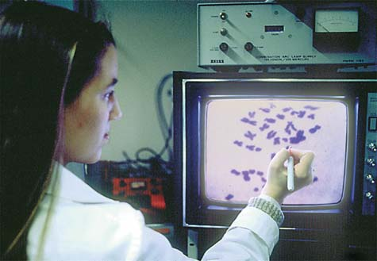

16 Genética humana y el genoma humano
347
CONCEPTOS CLAVE
16.1 El análisis de la genealogía y del cariotipo son métodos convencionales para estudiar la genética humana; los aspectos moleculares del genoma humano, incluyendo el estudio de asociación de genoma completo y la genómica comparativa, son cada vez más utilizados actualmente. 16.2 Las anomalías cromosómicas, como las aneuploidías —presencia o ausencia de un solo cromosoma— pueden causar enfermedades graves. 16.3 Las mutaciones en genes individuales pueden producir desórdenes genéticos. 16.4 Los investigadores están desarrollando métodos de terapia génica que podrían corregir ciertos desórdenes genéticos. 16.5 Las pruebas genéticas y las asesorías por un genetista ayudan a los individuos a tomar decisiones sobre su descendencia. 16.6 Ciertos avances de la genética humana plantean cuestiones éticas.
L
os principios de la genética se aplican a todos los organismos, incluyendo seres humanos. Sin embargo, existen importantes diferencias que separan la investigación genética en seres humanos de la investigación genética de otros organismos. Para estudiar la herencia en otras especies, los genetistas pueden llevar a cabo cruzamientos controlados entre los individuos y producir muchas crías en condiciones cuidadosamente controladas. Por supuesto, la creación de cruzamientos experimentales en humanos es ilegal y no ética. Una diferencia importante entre la investigación genética en seres humanos y otros organismos es que los organismos modelo utilizados en la investigación genética de especies no humanas, en general producen mucha descendencia y sus tiempos de generación entre los períodos reproductivos son cortos. En cambio, la mayoría de las familias humanas son pequeñas, y transcurren de 20 a 30 años o más entre generaciones sucesivas. A pesar de las difi cultades inherentes en el estudio de la herencia humana, la genética humana , la ciencia de la variación heredada en los seres humanos, está progresando rápidamente (vea la fi gura). Los investigadores realizan estudios de la población de familias numerosas. Además, el interés médico sobre las enfermedades genéticas humanas ha promovido la ampliación del conocimiento de la genética humana. Los estudios genéticos
Mapeo cromosómico rápido. Esta MO fl uorescente del cromosoma humano 10 ( izquierda ) es el resultado de la unión de sondas fl uorescentes de diferentes colores a secuencias específi cas de ADN. (Los loci y sus respectivas claves están a la derecha ). Esta técnica permite a los investigadores determinar de manera efi ciente los reordenamientos del cromosoma relacionados con ciertas anomalías cromosómicas.
®Regents of the University of California 2005/Dr. Uli Weier/Photo Researchers, Inc.
348 Capítulo 16
métodos modernos de cariotipo, el número de cromosomas aceptado para la especie humana era de 48, con base en un estudio de cromosomas humanos publicado en 1923. La difi cultad en separar los cromosomas para que pudieran contarse con precisión fue la razón por la que los investigadores contaron 48 cromosomas humanos. En 1952, el biólogo celular T. C. Hsu de la Universidad de Texas trató por error, algunas células con una solución salina hipotónica; esto provocó que las células se hincharan y los cromosomas se esparcieran, facilitando de este modo el recuento de los mismos. Se crearon también otras técnicas, y en 1956 los investigadores Joe Hin Tjio y Albert Levan, trabajando en Suecia, informaron que los seres humanos tienen 46 cromosomas, no 48. Otros investigadores comprobaron posteriormente esta información. La historia del número de cromosomas humanos es un ejemplo valioso de la naturaleza “autocorrectora” de la ciencia (aunque estas correcciones puedan tardar un tiempo). La reevaluación de hechos e ideas establecidos, usando con frecuencia técnicas mejoradas o nuevos métodos, es una parte esencial del proceso científi co. Los cromosomas humanos son visibles sólo en las células en división (vea el capítulo 10), y es difícil obtener células en forma directa del cuerpo humano, durante este proceso. En general, los investigadores utilizan muestras de sangre porque se puede inducir la división de los glóbulos blancos en un medio de cultivo, al tratarlos con ciertos compuestos químicos. Otras fuentes de células en proceso de división incluyen la piel y, para estudios cromosómicos prenatales, vellosidades coriónicas o células fetales vertidas en el líquido amniótico (que se analizan posteriormente en el capítulo). Para analizar el cariotipo, los biólogos cultivan células humanas en proceso de división y las tratan después con el medicamento colchicina , que bloquea las células en la metafase mitótica o en la profase tardía, momentos en que los cromosomas están más fuertemente condensados. A continuación, los investigadores ponen las células en una solución hipotónica; las células se hinchan y los cromosomas se esparcen de manera que son fácilmente observables. Los investigadores realizan un aplanamiento celular cubriendo con el portaobjetos y tiñen los cromosomas para revelar el patrón de bandas, que es único en cada par homólogo. Después de escanear la imagen en una computadora, los pares homólogos se identifi can y se juntan ( FIGURA 16-1 ). Por convención, los genetistas identifi can los cromosomas con base en la longitud; posición del centrómero; patrón de bandas, que se obtiene al teñir los cromosomas con colorantes que producen bandas alternas oscuras y claras de diferente amplitud; y otras características como los satélites, pequeñas protuberancias de material cromosómico en las puntas de algunos cromosomas. En el cariotipo, los cromosomas somáticos excepto el 21, que es más pequeño que el cromosoma 22, se nombran y alinean en orden decreciente de tamaño. El cromosoma humano más grande (el cromosoma 1) es aproximadamente cinco veces más largo que el cromosoma más pequeño (el cromosoma 21), pero las diferencias de tamaño entre los cromosomas de tamaños intermedios son leves. Los cromosomas sexuales X y Y de un varón normal son homólogos sólo en sus puntas; las mujeres normales tienen dos cromosomas X y ningún cromosoma Y. Las diferencias respecto al cariotipo normal, es decir, desviaciones en el número o estructura cromosómica, se asocian con ciertos desórdenes como el síndrome de Down (que se analiza posteriormente en el capítulo). Otra manera de distinguir los cromosomas en el cariotipo es por hibridación in situ por fl uorescencia (HISF) . Para esto, el genetista realiza la tinción fl uorescente de la cadena de ADN complementaria de un cromosoma específi co. El ADN cromosómico se desnaturaliza, es decir, se separan las dos cadenas, de manera que la cadena teñida pueda unirse a éste. Se utiliza un marcador diferente para cada cromosoma, que “colo-
de otros organismos han proporcionado inapreciables conocimientos: muchas interrogantes de la herencia humana se han podido explicar utilizando organismos modelo, como bacterias, levaduras, gusanos, moscas de la fruta, y ratones. Recientemente, el genoma humano , que representa la totalidad de la información genética de las células humanas, se ha mapeado y secuenciado. En la secuenciación del ADN , los investigadores identifi can el orden de los nucleótidos en el ADN para comprender la base genética de las similitudes y las diferencias humanas. Este capítulo se inicia con la descripción de los métodos de investigación de la genética humana incluyendo nuevas áreas que se han ido desarrollando como un resultado del Proyecto Genoma Humano. Después se analizan diferentes desórdenes genéticos humanos. Se explora el uso de la terapia génica en algunos de estos desórdenes, así como la aplicación de pruebas, análisis, y consejería genética en familias de riesgo. El capítulo concluye con un análisis de los problemas éticos relacionados con la genética humana.
16.1 ESTUDIO DE LA GENÉTICA HUMANA
OBJETIVOS DE APRENDIZAJE
1 Distinguir entre cariotipo y análisis genealógico (linaje). 2 Analizar las implicaciones del Proyecto Genoma Humano. 3 Analizar el estudio de la fi brosis quística, con base en el ratón como organismo modelo.
Los genetistas humanos utilizan diversos métodos que les permiten identifi car defectos y hacer inferencias acerca de la manera en que se hereda un rasgo. Se considerarán tres de estos métodos: la identifi cación de los cromosomas por cariotipo; el análisis de los patrones de herencia familiares utilizando genealogía o linajes; y la secuenciación del ADN junto al mapeo de genes como resultado del proyecto del genoma humano. Con frecuencia, los investigadores estudian la herencia humana de un modo más efectivo combinando éstos y otros métodos.
Los cromosomas humanos se estudian mediante el cariotipo
Al igual que Mendel y sus plantas de guisantes, los investigadores que trabajan con organismos más simples han descubierto muchos de los principios básicos de la genética. En estos organismos, con frecuencia es posible establecer datos genéticos como el número y la estructura de los cromosomas específi cos. Algunos organismos modelo utilizados en genética, como la mosca de fruta Drosophila melanogaster , tienen muy pocos cromosomas; en cuyo caso son sólo cuatro pares. En las glándulas salivales de las larvas de Drosophila, los cromosomas son sufi cientemente grandes como para que sus detalles estructurales se puedan observar con facilidad. (Observe el detalle que se muestra en la micrografía óptica de los cromosomas de la Drosophila en la fi gura 2-3). Este organismo, por lo tanto, ha proporcionado oportunidades únicas para correlacionar ciertos cambios fenotípicos heredados con alteraciones en la estructura cromosómica. El número normal de cromosomas en la especie humana es de 46:44 autosomas (22 pares) y 2 cromosomas sexuales (1 par). Un cariotipo (del griego, signifi ca “núcleo”) es la composición cromosómica de un individuo, incluye tanto el número de cromosomas como su estructura. Hasta la mitad de la década de 1950, cuando los biólogos adoptaron los
Genética humana y el genoma humano 349
La genealogía familiar ayuda a identifi car ciertas condiciones heredadas
Los primeros estudios de genética humana normalmente estudiaban la distribución en los miembros de una familia de pares de rasgos contrastantes fácilmente identifi cables. Un “árbol familiar” que muestra los patrones de herencia, es decir, la transmisión de rasgos genéticos en una familia durante varias generaciones, se conoce como genealogía o linaje . El análisis genealógico aún se utiliza ampliamente, incluso en el mundo actual de las poderosas técnicas de genética molecular, ya que ayuda a los genetistas moleculares a determinar las interrelaciones exactas de las moléculas de ADN analizadas, provenientes de individuos emparentados. El análisis genealógico es también una herramienta importante para los consejeros genéticos y clínicos. Sin embargo, debido a que las familias humanas tienden a ser pequeñas y puede no estar disponible la información de ciertos miembros de la familia, especialmente parientes fallecidos, el análisis genealógico tiene sus limitaciones. Los diagramas genealógicos se realizan usando símbolos estandarizados. Examine la FIGURA 16-2 , que muestra una genealogía para el albinismo , la ausencia del pigmento melanina en la piel, pelo y ojos. Cada fi la horizontal representa una generación diferente, con la generación más antigua (número romano I) en la parte superior y la generación más reciente en la parte inferior. Dentro de una generación dada, los individuos se numeran normalmente de forma consecutiva, de izquierda a derecha, utilizando números arábigos. Una línea horizontal conecta los progenitores, y una línea vertical une los padres con sus hijos. Por ejemplo, los individuos II-3 y II-4 son los padres de cuatro descendientes (III-1, III-2, III-3 y III-4). Observe que los individuos en una generación determinada pueden no estar genéticamente relacionados. Por ejemplo II-1, II-2 y II-3 no están relacionados con II-4 y II-5. Dentro de un grupo de hermanos, el mayor está a la izquierda, y el menor a la derecha. El alelo del albinismo no es dominante, si lo fuera, por lo menos una de las mujeres progenitoras del nivel III-2 habría sido albina. Esta genealogía se explica sólo si el albinismo se hereda como un alelo recesivo autosómico (no se transporta en un cromosoma sexual). En tales casos, dos progenitores fenotípicamente normales podrían producir una descendencia albina porque son heterocigotos y cada uno podría transmitir un alelo recesivo. El estudio de las genealogías permite a los genetistas humanos predecir cómo se heredan los rasgos fenotípicos que están determinados por el genotipo de un único locus. Se han descrito aproximadamente unos 10,000 rasgos en humanos. Los tres tipos de herencia de un único locus, que se identifi can con mayor frecuencia en el análisis genealógico son: la herencia autosómica dominante, la herencia autosómica recesiva y la herencia ligada al cromosoma X recesiva. Posteriormente en el capítulo se defi nen y analizan algunos ejemplos de estos tipos de herencia.
En el Proyecto Genoma Humano se secuenció el ADN de todos los cromosomas humanos
Los científi cos participantes en el Proyecto del Genoma Humano secuenciaron el ADN de todo el genoma nuclear humano, el cual incluye alrededor de 2.9 miles de millones de pares de bases. (El genoma mitocondrial humano fue secuenciado en 1981). Este resultado de carácter internacional, se basó en el ADN de 6 a 10 individuos anónimos, y fue esencialmente completado en 2001 por cientos de investigadores que trabajaron en dos equipos independientes, el Consorcio Internacional de Secuenciación del Genoma Humano, fi nanciado por el gobierno y la empresa Celera Genomics, con capital privado. La fi nalización del Proyecto Genoma Humano en 2003 fue un hecho signifi cativo en la genética ( TABLA 16-1 ).
rea” cada uno con un color diferente (vea el cariotipo en la fi gura 16-1). Un cromosoma que presente varios colores ( no se incluye la muestra ) indica su rompimiento y fusión con otros cromosomas, una anomalía asociada con ciertas enfermedades genéticas y muchos tipos de cáncer.
MÉTODO DE INVESTIGACIÓN
Los investigadores utilizan los cariotipos para visualizar anomalías cromosómicas individuales.
Los cariotipos se preparan comúnmente a partir de cultivos de leucocitos. Los investigadores colocan las células cultivadas en un portaobjetos, derramando los cromosomas fuera de los núcleos rotos. Su observación al microscopio óptico se conecta a una computadora con software de análisis de imágenes, que ayuda a los biólogos en la identifi cación de los cromosomas homólogos y en su organización por tamaño. Antes de que se utilizaran las computadoras, los investigadores cortaban y pegaban las fotografías de los cromosomas.
SIU/Peter Arnold, Inc.
Estos cromosomas han sido “coloreados” por diferentes tintes fl uorescentes que se hibridan con los pares específi cos de cromosomas homólogos. La pintura ayuda al investigador a identifi car los cromosomas. La imagen corresponde a un cariotipo humano masculino, normal.
© Dr. Thomas Liehr, courtesy of Biology Image Library
FIGURA 16-1 Cariotipo
¿Por qué se utiliza?
¿Cómo se hace esto?

350 Capítulo 16
La identifi cación de genes representa un extraordinario reto. ¿Cómo identifi caría un gen en una secuencia de ADN si no sabe nada sobre él? El genoma humano es extremadamente complejo. Incluye el contenido en ADN tanto del núcleo como de las mitocondrias. Sin embargo, el ADN nuclear representa casi toda la información genética del genoma humano. Como en los genomas de otros organismos eucariotas, parte (en humanos, sólo un 2%) del genoma humano especifi ca la síntesis de polipéptidos, mientras que otros segmentos sólo codifi can productos ARN. La mayor parte del genoma humano se compone de elementos reguladores no codifi cantes, secuencias repetitivas (copias múltiples) de ADN, y segmentos de genes cuyas funciones se desconocen. En ocasiones los genes se traslapan unos con otros, y en otros casos un único gen codifi ca múltiples proteínas. Relacionar los genes específi cos con los ARN y las proteínas que codifi can y determinar las funciones que desempeñan en el cuerpo humano son algunas líneas de investigación en genética humana que actualmente están abordando los científi cos. Por ejemplo, la secuencia de ADN del cromosoma humano 22 se escaneó con programas computarizados para identifi car elementos marcadores asociados típicamente con genes, como por ejemplo los promotores. Usando este método, los investigadores identifi caron 545 genes. Muchos de estos genes son genes “potenciales” en el sentido que aún no se han aislado sus ARN mensajeros (ARNm) ni sus productos proteínicos. Otros genes se identifi caron gracias a que codifi can proteínas similares a otras identifi cadas previamente en los seres humanos o en otros organismos. A pesar de
Los científi cos esperan identifi car finalmente la localización de todos los genes en el ADN secuenciado. En 2001, el National Human Genome Research Institute (NHGRI) estimó que había de 35,000 a 45,000 genes codifi cantes de proteínas en el genoma humano, pero a fi nes de la década estas cifras bajaron al rango de 20,000 a 25,000.
I
II
III
Mujer normal
Hombre normal
Mujer albina
Hombre albino
Clave:
Apareamiento
Hermanos por apareamiento de los mismos padres
1 2 3 4
1 2 3 4 5
1 2 3 4
Una niña albina de la población indígena de los Kunas juega con sus amigos. El albinismo es común entre los Kunas que viven en las islas San Blas, Panamá.
Al estudiar los antecedentes familiares, un investigador puede determinar el mecanismo genético de un rasgo heredado. En este ejemplo, III-2 representa una niña albina con dos padres fenotípicamente normales, II-3 y II-4.
©Mark Eveleigh/Alamy
FIGURA 16-2 Animada Una genealogía para el albinismo
Hechos relevantes seleccionados en genética
Año Avance científi co
1866 Mendel propuso la existencia de factores hereditarios conocidos ahora como genes
1871 Los ácidos nucleicos fueron descubiertos
1879 Los cromosomas fueron identifi cados y se observaron durante la división celular
1929 Se caracterizó la naturaleza química de los nucleótidos
1953 Se determinó la estructura del doble hélice del ADN
1960s Se explicó el código genético (cómo las proteínas están hechas de ADN)
1972 La primera molécula de ADN recombinante fue producida
1977 Comenzó la secuenciación del ADN
1986 Se logró la secuenciación automatizada del ADN
1995 Se completó la secuencia del primer genoma procariota (bacteria Haemophilus infl uenzae )
1996 Se completó la secuencia del primer genoma eucariota (levadura Saccharomyces cerevisiae )
1998 Se completó la primera secuencia del genoma de un eucariota multicelular (el gusano nematodo Caenorhabditis elegans )
2001 Se publicó el borrador de la secuencia completa del genoma humano; se descubrió que el 95% del genoma no codifi ca proteínas.
2003 Se completó la secuencia del ADN del genoma humano
TABLA 16-1
Genética humana y el genoma humano 351
Los investigadores utilizan los ratones como organismos modelo para estudiar enfermedades genéticas humanas
Muchas preguntas relacionadas con enfermedades genéticas humanas son difíciles de responder ya que causan problemas éticos relacionados con el uso de seres humanos como sujetos de prueba. Sin embargo, la investigación de cualquier enfermedad se ve muy facilitada si se utiliza un modelo animal para la experimentación. Un buen ejemplo es la fi brosis quística, una enfermedad genética causada por la mutación de un solo gen heredado como un alelo recesivo. En 1994, los investigadores utilizaron la recombinación homóloga de genes para producir cepas de ratones que eran ya sea homocigóticas o heterocigóticas para la fi brosis quística. El alelo que causa la fi brosis quística es una forma mutante de un locus implicado en el control del agua corporal y del balance electrolítico. Los genetistas han clonado este gen y han encontrado que codifi ca una proteína, la proteína CFTR, que sirve como un canal iónico de cloro en la membrana plasmática. (CFTR, se establece como, regulador de la conductancia transmembrana de la fi brosis quística ). Este canal iónico transporta iones cloruro fuera de las células de la mucosa del tracto digestivo y del sistema respiratorio. Cuando los iones cloruro salen de las células, el agua los sigue por ósmosis. Por lo tanto, las secreciones normales de estas células son relativamente acuosas. Debido a que las células de los individuos con fi brosis quística carecen de los canales cloruro normales, las secreciones de estos individuos tienen un bajo contenido en agua y su sudor es muy salado. Las células de los individuos heterocigotos sólo tienen la mitad del número normal de canales iónicos CFTR funcionales, pero son sufi cientes para mantener la fl uidez normal de sus secreciones. Algunos investigadores se están concentrando ahora en comprender el mecanismo por el que se activa o desactiva el canal CFTR en ratones. Esperan utilizar esta información para diseñar fármacos que potencien el transporte de cloruro a través de los canales CFTR. Estos fármacos presentan el potencial para tratar la fi brosis quística en los seres humanos activando los canales mutantes.
Repaso
■ ¿Qué tipos de información puede proporcionar un cariotipo humano?
■ ¿Qué es un análisis genealógico?
■ Mencione dos posibles benefi cios que los científi cos podrían esperar, con base en la profundización en el estudio del genoma humano?
■ ¿Cómo se utiliza un organismo modelo como el ratón para superar algunas de las difi cultades que se presentan en el estudio de una enfermedad genética humana?
16.2 ANOMALÍAS EN EL NÚMERO Y LA ESTRUCTURA CROMOSÓMICOS
OBJETIVOS DE APRENDIZAJE
4 Explicar cómo la no disyunción en la meiosis es responsable de anomalías cromosómicas como el síndrome de Down, el síndrome de Klinefelter y el síndrome de Turner. 5 Distinguir entre las siguientes anomalías estructurales en los cromosomas: translocaciones, deleciones y sitios frágiles.
La poliploidía , presencia de múltiples juegos de cromosomas, es común en plantas pero rara en animales. Puede surgir de errores en la separación de los cromosomas durante la meiosis o de la fecundación de un óvulo por más de un espermatozoide. Cuando ocurre en todas las células
las difi cultades, los científi cos están realizando progresos, y los estudios de mapeo les ayudarán a entender las relaciones físicas y funcionales entre genes y grupos de genes con base en su ordenamiento en los cromosomas. Ahora que se ha secuenciado el genoma humano, los investigadores estarán ocupados durante muchas décadas analizando la creciente compilación de datos moleculares humanos. Además de identifi car los genes, los científi cos quieren entender cuál es la función de cada gen, cómo interacciona cada gen con otros genes, y cómo se regula la expresión de cada gen en los diferentes tejidos. Finalmente, se identifi carán todas las miles de proteínas producidas en las células humanas, se determinará su estructura 3-D, y se evaluarán sus propiedades y funciones.
Los estudios de asociación del genoma completo demuestran la complejidad genética de las principales enfermedades humanas
Los investigadores también quieren estudiar las variaciones en la secuencia del genoma humano para aclarar las diferencias que podrían estar relacionadas con la susceptibilidad a ciertas enfermedades. Las potenciales aplicaciones médicas del Proyecto Genoma Humano son extraordinariamente prometedoras. Los genes en el cromosoma humano 22, por ejemplo, están asociados con al menos 27 enfermedades que se sabe que tienen un componente genético. Los genes causantes de muchas de estas enfermedades no se han identifi cado todavía. Por ejemplo, un gen implicado en la esquizofrenia está fuertemente ligado al cromosoma 22, pero los científi cos no conocen su localización exacta ni su función. Los estudios de asociación del genoma completo (AGC) comparan el genoma de individuos con una enfermedad en particular con el de individuos sanos, sin esa enfermedad. Por ejemplo, en 2007, los investigadores escanearon los genomas de más de 16,000 personas británicas comparando los patrones genéticos de personas sanas con los de las personas con una de las siete enfermedades comunes: desorden bipolar, enfermedad arterial coronaria, enfermedad de Crohn, hipertensión, artritis reumatoide, diabetes tipo 1 y diabetes tipo 2. Estos fenotipos de la enfermedad muestran patrones de herencia complejos, con muchos genes diferentes que contribuyen a la susceptibilidad. En este estudio en particular, los científi cos encontraron 24 variaciones asociadas con un riesgo aumentado de una o más de estas enfermedades. Las funciones de la mayoría de estas variaciones AGC aún no se han determinado, pero al conocer su ubicación en los cromosomas particulares, será más fácil que los investigadores estudien la genética de muchas enfermedades humanas comunes.
La genómica comparativa ha revelado varios centenares de segmentos de ADN idénticos en los genomas humano y de ratón
Se sabe que aproximadamente 500 segmentos de ADN mayores de 200 pares de bases están 100% conservados (es decir, son idénticos) en los genomas humano y de ratón. Este extraordinario grado de conservación tiene importantes implicaciones evolutivas, ya que signifi ca que estos segmentos no han mutado durante los cerca de 75 millones de años transcurridos desde que los ratones y los seres humanos compartieron un ancestro común. Durante este tiempo, otros fragmentos de ADN experimentaron considerables mutaciones y selecciones, lo que permitió a los ratones y a los seres humanos divergir a sus estados actuales. A pesar de que todavía no se han determinado las funciones de estos elementos sin cambios, está claro que tienen una función vital. (Si no fueran esenciales en su forma actual, habrían experimentado mutaciones y selecciones). Muchos segmentos altamente conservados parecen contener elementos no codifi cantes de proteínas que podrían regular la expresión de otros genes.
352 Capítulo 16
punto posterior del desarrollo y da lugar al establecimiento de un clon de células anómalas en un individuo que por lo demás es normal. Esta mezcla de células con un número de cromosomas diferente puede o no afectar tejidos somáticos (del cuerpo) o de la línea germinal (reproductivos). Diferentes números de cromosomas son comunes en muchas células cancerosas, en particular en las de tumores sólidos. Sin embargo, aún no está claro si la aneuploidía es una causa o una consecuencia del cáncer. Se observan anomalías cromosómicas reconocibles en menos del 1% de los nacimientos vivos, pero existen pruebas sustanciales que sugieren que la tasa es mucho mayor en la concepción. Al menos el 17% de los embarazos detectados a las ocho semanas terminará en un aborto espontáneo. Aproximadamente la mitad de estos embriones abortados espontáneamente tiene anomalías cromosómicas importantes, incluyendo trisomías autosómicas (como la trisomía 21), triploidía, tetraploidía, y síndrome de Turner (X0), en el que 0 se refi ere a la ausencia de un segundo cromosoma sexual. Las monosomías autosómicas son en extremo raras, posiblemente porque inducen un aborto espontáneo muy pronto en el embarazo, antes incluso de que la mujer se dé cuenta de que está embarazada. Algunos investigadores hacen estimaciones sorprendentemente altas (50% o más) de la tasa de pérdida de embriones muy prematuros. Las anomalías cromosómicas quizás inducen muchos de estos abortos espontáneos.
El síndrome de Down está causado normalmente por la trisomía 21
El síndrome de Down es una de las anomalías cromosómicas más comunes en los seres humanos. (El término síndrome se refi ere a un conjunto de síntomas que se presentan normalmente de forma conjunta en un desorden particular). Se llamó así en honor a J. Langdon Down, el médico británico que, en 1866, describió por primera vez la condición. Los individuos afectados presentan anomalías en la cara, párpados, lengua, manos, y otras partes del cuerpo y son normalmente retrasados mental y físicamente ( FIGURA 16-4a ). Son también inusualmente susceptibles a ciertas enfermedades, como la leucemia y la enfermedad de Alzheimer.
del cuerpo, la poliploidía es letal en los seres humanos y muchos otros animales. Por ejemplo, algunos embriones humanos abortados espontáneamente al inicio del embarazo presentan triploidía (3n). Las anomalías causadas por la presencia de un único cromosoma extra o la ausencia de un cromosoma, llamadas aneuploidías , son más comunes que la poliploidía. La disomía es el estado normal: dos de cada tipo de cromosoma en la célula o individuo. En la trisomía , una célula o individuo tiene dos copias de cada cromosoma excepto por uno, el cual tiene tres copias; el número de cromosomas trisómicos se designa por 2 n + 1. En la monosomía , un individuo carece de un miembro de un par de cromosomas; el número de cromosomas monosómicos se designa por 2 n – 1. La TABLA 16-2 resume algunos desórdenes producidos por aneuploidías. Las aneuploidías surgen por lo común como resultado de una división meiótica (o, raramente, mitótica) anómala en la que algún cromosoma no se separa en la anafase. Este fenómeno, denominado no disyunción , puede ocurrir con autosomas o con los cromosomas sexuales. En la meiosis, la no disyunción cromosómica se puede producir durante la primera o la segunda división meiótica (o ambas). Por ejemplo, dos cromosomas X que no se separan, ya sea en la primera o en la segunda división meiótica, pueden entrar en forma conjunta en el núcleo del óvulo. Alternativamente, los dos cromosomas X unidos pueden ir a un cuerpo polar, dejando el óvulo sin cromosoma X. (Recuerde del capítulo 10 que un cuerpo polar es una célula haploide no funcional producida durante la ovogénesis, vea también la fi gura 50-11). La no disyunción de un par XY durante la primera división meiótica en el hombre puede dar lugar a la formación de un espermatozoide tanto con un cromosoma X como uno Y, o a un espermatozoide con ninguno de los dos cromosomas ( FIGURA 16-3 ). De un modo análogo, la no disyunción en la segunda división meiótica puede producir espermatozoides con dos X o dos Y. Cuando un gameto anómalo se une con uno normal, el cigoto resultante tiene una anomalía cromosómica que estará presente en cada una de las células del cuerpo. La no disyunción meiótica da como resultado un número de cromosomas anómalo en el estado de desarrollo del cigoto, de manera que todas las células del individuo tienen un número de cromosomas anómalo. En cambio, la no disyunción durante la división mitótica ocurre en algún
Anomalías cromosómicas: desórdenes producidos por aneuploidías
Nombre Cariotipo común Descripción clínica
Trisomía 13 Síndrome de Patau Múltiples defectos, con muerte por lo general a los 3 meses de edad
Trisomía 18 Síndrome de Edwards Deformidades del oído, defectos del corazón, espasticidad, y otros daños, muerte por lo general a la edad de 1 año, pero algunos sobreviven mucho más tiempo
Trisomía 21 Síndrome de Down En general la frecuencia es de aproximadamente 1 por cada 800 nacidos vivos. La mayoría de las concepciones que implican alguna trisomía ocurren en madres mayores (35+ años), pero la translocación resultante en el equivalente de la trisomía no está relacionada con la edad. La trisomía 21 se caracteriza por un pliegue de piel por encima del ojo, diversos grados de retraso mental, baja estatura, sobresale la lengua arrugada, pliegue palmar transversal, deformidades cardiacas, y un mayor riesgo de leucemia y de la enfermedad de Alzheimer.
X0 Síndrome de Turner Baja estatura, cuello unido por una telilla o membrana, a veces, retraso mental leve; ovarios degenerados en la vida embrionaria tardía, dando lugar a las características sexuales rudimentarias, el género es femenino, no hay corpúsculos de Barr
XXY Síndrome de Klinefelter Hombre con la lenta degeneración de testículos, senos agrandados, un corpúsculo de Barr por celda
XYY Cariotipo XYY Muchos hombres no tienen síntomas inusuales, mientras que otros son inusualmente altos, con fuerte acné, y una cierta tendencia al retraso mental leve
XXX Triple-X A pesar de tres cromosomas X, por lo general hembras fértiles, con una inteligencia normal, dos cuerpos de Barr por celda
TABLA 16-2
Genética humana y el genoma humano 353
humanas, el cáncer y la enfermedad de Alzheimer presentan tanto un componente genético como ambiental). El síndrome de Down ocurre en todos los grupos étnicos en aproximadamente 1 de cada 800 nacimientos vivos. Su incidencia aumenta marcadamente con la edad materna. La aparición del síndrome de Down no se ve afectada por la edad del padre (aunque otras enfermedades sí, incluyendo la esquizofrenia y la acondroplasia, la forma más común de enanismo). El síndrome de Down es 68 veces más probable en la descendencia de madres con 45 años que en la descendencia de madres con 20 años. Sin embargo, la mayoría de los niños con síndrome de Down en Estados Unidos nacen de madres más jóvenes de 35 años, en parte porque éstas superan en número a las madres de mayor edad, y en parte porque aproximadamente un 90% de las madres mayores a las que se les
Estudios genéticos han revelado que la mayoría de las personas con síndrome de Down tienen 47 cromosomas debido a una trisomía autosómica: esta condición se conoce como trisomía 21 ( FIGURA 16-4b ). La no disyunción durante la meiosis es responsable de la presencia de un cromosoma extra. Aunque no falta información genética en estos individuos, la copia extra de los genes del cromosoma 21 da lugar a algún tipo de desequilibrio genético que causa un desarrollo físico y mental anómalo. El síndrome de Down es bastante variable en su expresión, con algunos individuos afectados mucho más severamente que otros. Los investigadores están usando tecnologías de ADN para precisar los genes del cromosoma 21 que afectan al desarrollo mental, así como posibles oncogenes (genes causantes de cáncer) y genes que podrían estar implicados en la enfermedad de Alzheimer. (Al igual que muchas condiciones
La aneuploidía puede ocurrir por la no disyunción meiótica, la segregación anómala de cromosomas durante la meiosis.
No disyunción de X en la segunda división meiótica
X
Y
Primera división meiótica normal
XX
Y
Y
No disyunción de Y en la segunda división meiótica
YY
X
Y
No disyunción en la primera división meiótica
XY
XY
X
X
La no disyunción en la primera división meiótica da como resultado dos espermatozoides XY y dos espermatozoides sin X ni Y.
La no disyunción de la segunda división meiótica da como resultado un espermatozoide con dos cromosomas X, dos con un cromosoma X cada uno, y uno sin cromosomas sexuales ( cuadro de la derecha ).
FIGURA 16-3 No disyunción meiótica En estos ejemplos de no disyunción de los cromosomas sexuales en el hombre humano, sólo se muestran los cromosomas X ( morado ) y Y ( azul ) en un espermatozoide con dos cromosomas Y. (Las posiciones de los cromosomas metafásicos se han modifi cado para ahorrar espacio).
PUNTO CLAVE
354 Capítulo 16
Los individuos con el síndrome de Klinefelter son hombres con 47 cromosomas, incluyendo dos X y un Y. Presentan testículos pequeños, producen poco o nada de esperma, y son por lo tanto estériles. La hipótesis que el cromosoma Y es el principal determinante del fenotipo masculino se ha sostenido por el hecho que al menos un gen en el cromosoma Y actúa como un interruptor genético, dirigiendo el desarrollo masculino. Los hombres con síndrome de Klinefelter tienden a ser inusualmente altos y presentan un desarrollo mamario similar al de las mujeres. Aproximadamente la mitad muestra cierto retraso mental, pero muchos viven vidas relativamente normales. Sin embargo, cada una de sus células tiene un corpúsculo de Barr. De acuerdo con esta prueba, se clasifi carían en forma errónea como mujeres. Aproximadamente 1 de cada 1000 niños nacidos vivos tiene el síndrome de Klinefelter. La composición de cromosomas sexuales en el síndrome de Turner , en el que un individuo tiene un único cromosoma sexual, un cromosoma X, se designa por X0. Ya que carecen del efecto determinante masculino del cromosoma Y, los individuos con el síndrome de Turner se desarrollan como mujeres. Sin embargo, las estructuras genitales internas y externas están subdesarrolladas, y son estériles. Aparentemente se necesita un segundo cromosoma X para el desarrollo normal de los ovarios en un embrión hembra. El examen de las células de estos individuos no revela corpúsculos de Barr, ya que no hay cromosoma X extra a desactivar. Utilizando los estándares de la prueba del corpúsculo de Barr, estos individuos se clasifi carían erróneamente como hombres. Aproximadamente 1 de cada 2500 niñas nacidas vivas tiene el síndrome de Turner. La gente con un cromosoma X más dos cromosomas Y son fenotípicamente hombres, y son fértiles. Otras características de estos individuos (altos, con frecuencia con acné severo) difícilmente se clasifi can como síndrome; de ahí que se designe como cariotipo XYY . Hace algunos años, varios estudios ampliamente publicitados sugirieron que los hombres con esta condición presentaban una mayor probabilidad de
realizan pruebas prenatales interrumpen el embarazo si se diagnostica síndrome de Down. La relación entre la mayor incidencia del síndrome de Down y la edad materna se ha estudiado durante décadas, pero no hay una explicación. Los científi cos han propuesto varias hipótesis para explicar el efecto de la edad materna, pero ninguna tiene un fundamento inequívoco. Una explicación es que las mujeres mayores han mantenido los óvulos en meiosis suspendida durante demasiado tiempo, lo que daría lugar al deterioro del aparato del huso meiótico. (Una mujer nace con todos los óvulos que tendrá; estos ovocitos permanecen en la profase I de la meiosis hasta la ovulación). Otra posibilidad es que un útero envejecido rechace menos frecuentemente un feto anómalo.
La mayoría de las aneuploidías de cromosomas sexuales son menos severas que las aneuploidías autosómicas
Las aneuploidías de cromosomas sexuales se toleran relativamente bien (vea la tabla 16-2). Esto es cierto, al menos en parte, gracias al mecanismo de compensación de dosis : las células de mamíferos compensan el material extra del cromosoma X inactivando un cromosoma X. El X inactivo se puede observar como un corpúsculo de Barr , una región teñida oscura, que se trata de cromatina condensada situada al lado de la envoltura nuclear de un núcleo interfásico (vea la fi gura 11-16). Los investigadores han utilizado la presencia de un corpúsculo de Barr en las células de las mujeres normales (y su ausencia en las de los hombres) como una prueba inicial para determinar si un individuo es genéticamente una mujer o un hombre. Sin embargo, como se verá pronto en el contexto de las aneuploidías de cromosomas sexuales, la prueba del corpúsculo de Barr tiene sus limitaciones.
Este niño con síndrome de Down está trabajando en un experimento de ciencia en su clase de jardín de niños. Algunas personas con síndrome de Down aprenden a leer y escribir.
Observe la presencia de un cromosoma 21 extra en este cariotipo coloreado de una mujer con síndrome de Down.
Richard Hutchings/Photo Researchers, Inc.
CNRI/Science Photo Library/Photo Researchers, Inc.
FIGURA 16-4 Síndrome de Down
Genética humana y el genoma humano 355
La translocación es la unión de una parte de un cromosoma a otro cromosoma
Las consecuencias de las translocaciones varían considerablemente. Incluyen deleciones, en las que faltan algunos genes, y duplicaciones, en las que hay copias extra de ciertos genes. En aproximadamente 4% de los individuos con síndrome de Down, sólo están presentes 46 cromosomas, pero uno es anómalo. El brazo largo del cromosoma 21 se ha translocado al brazo largo de otro cromosoma, normalmente al cromosoma 14. Los individuos con síndrome de Down por translocación tienen un cromosoma 14, un cromosoma 14/21 combinado, y dos copias normales del cromosoma 21. Todo o parte del material genético del cromosoma 21 está por lo tanto presente por triplicado. Cuando se estudian los cariotipos de los padres en estos casos, los genetistas por lo común encuentran que ya sea la madre o el padre tiene sólo 45 cromosomas, aunque ella o él son por lo general normales fenotípicamente. El progenitor con 45 cromosomas tiene un cromosoma 14, un cromosoma 14/21 combinado, y un cromosoma 21; aunque el cariotipo es anómalo, no hay material genético extra. Al contrario de lo que ocurre en la trisomía 21, el síndrome de Down por translocación puede encontrarse en las familias, y su incidencia no está relacionada con la edad materna.
Una deleción es la pérdida de parte de un cromosoma
A veces los cromosomas se rompen y no se vuelven a unir. Estos rompimientos resultan en deleciones que pueden oscilar desde unos pocos pares de bases hasta un brazo cromosómico completo. Como se puede suponer, las grandes deleciones son generalmente mortales, mientras que las pequeñas deleciones pueden no tener efecto o pueden causar desórdenes humanos reconocibles. Un desorden causado por deleción (1 de cada 50,000 nacimientos vivos) es el síndrome del cri du chat (maullido de gato) , en el que
manifestar tendencias criminales y por lo tanto de ser encarcelados. Sin embargo, estos estudios fueron descartados porque se basaban en un número muy bajo de hombres XYY, y carecían de un estudio control adecuado de hombres XY. La opinión predominante en la genética médica actual es que en la población general hay muchos hombres XYY no diagnosticados que no presentan comportamientos criminales o inusualmente agresivos y que es muy poco probable que sean encarcelados.
Las anomalías en la estructura cromosómica causan ciertos desórdenes
Las anomalías cromosómicas no sólo están causadas por cambios en el número cromosómico sino también por distintos cambios en la estructura de uno o más cromosomas. El rompimiento y unión de partes de cromosomas da como resultado cuatro cambios estructurales dentro o entre cromosomas: duplicaciones, inversiones, deleciones y translocaciones ( FIGURA 16-5 ). Los rompimientos en los cromosomas son el resultado de errores durante la replicación o la recombinación. En una duplicación , un segmento del cromosoma está repetido una o más veces; estas repeticiones aparecen con frecuencia dispuestas en tándem unas respecto a las otras. La orientación de un segmento cromosómico se altera en una inversión . En una deleción , el rompimiento causa la pérdida de parte de un cromosoma, junto con los genes de ese segmento. Una deleción puede ocurrir en el extremo de un cromosoma o en una parte interna del cromosoma. En algunos casos de translocación , un fragmento cromosómico se rompe y se une a un cromosoma no homólogo. En una translocación recíproca , dos cromosomas no homólogos intercambian segmentos. A continuación se consideran tres ejemplos simples de cambios estructurales en uno o más cromosomas que resultan en fenotipos anómalos: translocaciones, deleciones, y sitios fr ágiles, que son lugares del cromosoma susceptibles a romperse.
A A
A
A
A
B
Segmento perdido
A
A
A
A
B
- Una duplicación es un segmento repetido de un cromosoma. En este ejemplo, el segmento A se repite.
A A B B
Una translocación recíproca se presenta cuando dos cromosomas no homólogos intercambian segmentos.
Una inversión es un segmento de un cromosoma con una orientación invertida. Una inversión no cambia la cantidad de material genético en el cromosoma, sólo su arreglo u orden dentro del cromosoma.
Una deleción es la pérdida de un segmento cromosómico. Una deleción puede ocurrir en la punta (que se muestra) o dentro del cromosoma.
FIGURA 16-5 Animada Anormalidades comunes de la estructura de los cromosomas
356 Capítulo 16
progenitor macho o hembra. Para algunos genes impresos, el alelo heredado del padre está siempre reprimido (no se expresa); para otros genes impresos, el alelo heredado de la madre siempre está reprimido. Así, los genomas materno y paterno tienen diferentes impresiones que resultan en la expresión génica diferencial en el embrión. Como se analizó en el capítulo 14, la herencia epigenética se refi ere a cambios en la forma en que se expresa un gen sin ninguna modifi cación de la codifi cación de las bases de ADN. La herencia epigenética puede causar cierta impronta genómica. Dos trastornos genéticos raros proporcionan una fascinante demostración de la impronta genómica. En el síndrome de Prader-Willi ( SPW ), los individuos se convierten en obesos y comedores compulsivos, también son de baja estatura y de ligera a moderadamente retrasados. En el síndrome de Angelman ( SA ), los individuos afectados son hiperactivos, tienen retraso mental, son incapaces de hablar, y sufren de convulsiones. Una pequeña deleción de varios loci de la misma región del cromosoma 15 causa tanto SPW como SA ( FIGURA 16-7a ). Uno de estos loci eliminados es responsable de SPW, otro de SA. El análisis genealógico ha demostrado que cuando la persona hereda la deleción del padre, se produce el SPW, en tanto que cuando la persona hereda la deleción de la madre, ocurre el SA. Este patrón de herencia sugiere que el gen normal del SPW se expresa sólo en el cromosoma paterno y el gen normal SA se expresa sólo en el cromosoma materno. El SPW se produce porque el gen SPW reprimido (impreso)
parte del brazo corto del cromosoma 5 está delecionado. Como en la mayoría de las deleciones, el punto exacto de rompimiento en el cromosoma 5 varía de un individuo a otro; algunos casos del cri du chat implican una pequeña pérdida, mientras que otros implican una deleción de pares de bases más sustancial. Los niños nacidos con el síndrome de cri du chat tienen típicamente una cabeza pequeña con facciones alteradas descritas como “cara de luna” y un llanto distintivo que suena como un gatito maullando. (El nombre “cri du chat” signifi ca literalmente “maullido de gato” en francés). Los individuos afectados normalmente sobreviven a la infancia pero presentan un retraso mental severo.
Los sitios frágiles son puntos débiles en lugares específi cos de las cromátidas
Un sitio frágil es un lugar donde parte de una cromátida aparece unida al resto del cromosoma por una fi na hebra de ADN. Los sitios frágiles se presentan en una localización específi ca en ambas cromátidas de un cromosoma. Se han identifi cado en el cromosoma X así como en ciertos autosomas. La localización de un sitio frágil es la misma en todas las células de un individuo, así como en las células de otros miembros de la familia. Los científi cos presentan evidencias crecientes de que las células cancerosas pueden tener rompimientos en estos sitios frágiles. Se desconoce hasta el momento si el cáncer desestabiliza los sitios frágiles, dando lugar al rompimiento, o si los sitios frágiles en sí mismos contienen genes que contribuyen al cáncer. En el síndrome del cromosoma X frágil , también conocido como síndrome de Martin-Bell , un sitio frágil ocurre cerca de la punta del cromosoma X, donde el gen frágil X contiene un triplete de nucleótidos CGG que se repite de 200 a más de 1000 veces ( FIGURA 16-6 ). En un cromosoma normal, CGG se repite hasta 50 veces. El síndrome del cromosoma X frágil es la causa más común de retraso mental heredado. Los efectos del síndrome del cromosoma X frágil, que son más pronunciados en los hombres que en las mujeres, van desde desórdenes con un leve défi cit en el aprendizaje y en la atención hasta retraso mental severo e hiperactividad. De acuerdo con la National Fragile X Foundation , aproximadamente el 80% de los niños y el 35% de las niñas con síndrome del cromosoma X frágil son al menos un poco retrasados mentalmente. Las mujeres con síndrome del cromosoma X frágil son normalmente heterocigóticas (ya que el otro cromosoma es normal) y es por lo tanto más probable que tengan una inteligencia normal. El descubrimiento del gen X frágil en 1991 y el desarrollo, en 1994, del primer modelo de cromosoma X frágil en ratón ha proporcionado a los investigadores la manera de desarrollar y probar tratamientos potenciales, incluyendo la terapia génica. A nivel microscópico, las células nerviosas de individuos con el síndrome del cromosoma X frágil presentan dendritas mal formadas (la parte de la célula nerviosa que recibe impulsos nerviosos de las otras células nerviosas). A nivel molecular, las repeticiones de tripletas asociadas con el síndrome del cromosoma X frágil interrumpen el funcionamiento de un gen que codifi ca cierta proteína, denominada proteína del retraso mental X fr ágil (FMRP) . En las células normales, FMRP se une a docenas de moléculas de ARNm diferentes (exactamente por qué se unen aún no se entiende), pero en las células de individuos con el síndrome del cromosoma X frágil el alelo mutado no produce FMRP funcional.
La impronta genómica está determinada por si la herencia es del progenitor macho o hembra
Algunos rasgos son el resultado de la impronta genómica o parental , en que la expresión de un gen en una etapa dada de tejido o de desarrollo se basa en su origen parental, es decir, si el individuo hereda el gen del
- El alelo normal.
CGG repeticiones (200 a más de 1000 veces) CGG repeticiones (hasta 50 veces)
Sitio frágil
- El alelo defectuoso en las puntas de ambas cromátidas del cromosoma X.
1 μ m
Science/Visuals Unlimited
FIGURA 16-6 El síndrome X frágil Esta MEB coloreada muestra un cromosoma X con un sitio frágil y un cromosoma X normal.
Se han encontrado muchos ejemplos de la impronta genómica en mamíferos, y sin duda serán descubiertos más.
La proximidad homóloga del cromosoma 15 se muestra ( izquierda ) cerca de los genes SPW y SA y ( derecha ) del sitio de deleción que incluye a los loci SPW y SA.
Esta persona tiene el síndrome de Prader-Willi, porque el esperma contribuyó con un cromosoma 15 en el que se había delecionado el gen SPW. El cromosoma con los genes SPW reprimido (impreso) del óvulo no puede compensar la deleción.
Esta persona tiene el síndrome de Angelman debido a que el óvulo contribuyó con un cromosoma 15 en el que el gen SA se había delecionado. El cromosoma con el gen reprimido (impreso) del espermatozoide no puede compensar la deleción.
Locus SPW La deleción incluye a los loci SPW y SA
Locus SA
Gen SPW reprimido (impreso) Gen SPW ausente
Síndrome de Prader-Willi (SPW)
De óvulo
Cromosoma 15 en óvulo Cromosoma 15 en espermatozoide
Gen SA activo
De espermatozoide De espermatozoide De óvulo
Cromosoma 15 en óvulo Cromosoma 15 en espermatozoide
Gen SA reprimido (impreso)
Gen SPW activo Gen SA ausente
Síndrome de Angelman (SA)
FIGURA 16-7 Impronta genómico y el desarrollo del síndrome de Prader-Willi (SPW) y del síndrome de Angelman (SA) El gen SPW está activo en el gameto masculino y reprimido (impreso) en el gameto femenino. A la inversa, el gen SA está activo en el gameto femenino y reprimido (impreso) en el gameto masculino.
PUNTO CLAVE
358 Capítulo 16
duos presentan niveles elevados de fenilalanina, ácido fenilpirúvico, y compuestos similares. La fenilalanina acumulada se convierte en fenilcetonas, que dañan el sistema nervioso central, incluyendo el cerebro, en niños. El resultado fi nal en los casos no tratados es un retraso mental severo. Un niño con PKU es normalmente sano cuando nace porque su madre, que es heterocigótica, degrada el exceso de fenilalanina de ambos, ella y su feto. Sin embargo, durante la infancia y la niñez temprana, la acumulación de productos tóxicos causa fi nalmente un daño irreversible en el sistema nervioso central. A principios de la década de 1950, los niños con PKU se identifi caban tempranamente y se les ponía una dieta baja en fenilalanina, aliviando en forma espectacular sus síntomas. Es difícil adherirse a la dieta porque no contiene carne, pescado, productos lácteos, pan, o nueces. Además, los individuos con PKU no deberían consumir el sustituto del azúcar aspartame, que se incluye en muchas bebidas y alimentos de dieta, porque contiene fenilalanina. Se han desarrollado pruebas bioquímicas para la PKU, y en Estados Unidos se exige el análisis de los recién nacidos con una simple prueba de sangre. Gracias a estos programas de análisis de todos los recién nacidos y a la disponibilidad de un tratamiento efectivo, miles de niños a los que se les ha diagnosticado la PKU no han desarrollado retraso mental severo. La mayoría debe continuar la dieta hasta al menos la adolescencia. Los médicos recomiendan ahora que los pacientes cumplan la dieta durante toda la vida, porque algunos adultos que han dejado la dieta baja en fenilalanina experimentan ciertos problemas mentales, como difi cultades de concentración y pérdida de memoria a corto plazo. Irónicamente, hoy en día el éxito en el tratamiento de la PKU en la infancia presenta un nuevo reto. Si una mujer homocigótica que ha interrumpido la dieta especial se queda embarazada, los elevados niveles de fenilalanina en su sangre pueden dañar el cerebro del feto, a pesar incluso de que este feto sea heterocigótico. Por lo tanto, la madre debería reanudar la dieta, preferiblemente antes de quedar embarazada. Este procedimiento es por lo común (aunque no siempre) exitoso para prevenir los efectos de la PKU materna . Es especialmente importante en las mujeres que sean conscientes de la PKU materna y que reciban consejo y tratamiento médicos apropiados durante el embarazo.
La anemia falciforme es el resultado de un defecto de la hemoglobina
La anemia falciforme es un rasgo autosómico recesivo. La enfermedad es más común en personas descendientes de africanos (aproximadamen te 1 de cada 500 afroamericanos), y aproximadamente 1 de cada 12 afroamericanos son heterocigotos. Bajo condiciones con poco oxígeno, los eritrocitos de un individuo con anemia falciforme presentan una forma de hoz, o media luna, mientras que los eritrocitos normales son discos bicóncavos. La mutación que causa la anemia falciforme fue identifi cada por primera vez en 1957. Las células falciformes contienen moléculas de hemoglobina anómalas, que tienen el aminoácido valina en lugar de ácido glutámico en la posición 6 (el sexto aminoácido desde el extremo aminoterminal) de la cadena de b -globina (vea la fi gura 3-22a). La sustitución del ácido glutámico por valina provoca que las moléculas de hemoglobina se peguen unas a otras formando estructuras fi brilares que cambian la forma de algunos eritrocitos. Esta forma falciforme se presenta en las venas después de que se libera el oxígeno de la hemoglobina. Las células sanguíneas anómalas falciformes ralentizan el fl ujo sanguíneo y bloquean los vasos sanguíneos pequeños ( FIGURA 16-8 ), lo que da como resultado daños en los tejidos debidos a la falta de oxígeno y a los
de la madre no puede compensar el gen SPW ausente en el cromosoma paterno ( FIGURA 16-7b ). Del mismo modo, el SA ocurre porque el gen reprimido (impreso) del padre no puede compensar la ausencia del gen SA en el cromosoma materno ( FIGURA 16-7c ).
Repaso
■ ¿Cuáles son las anomalías cromosómicas específicas en el síndrome de Down, el síndrome de Klinefelter y el síndrome de Turner?
■ ¿Cuál es la anomalía cromosómica en el síndrome de cri du chat?
■ ¿Cuál es la anomalía cromosómica en el síndrome de X frágil?
16.3 ENFERMEDADES GENÉTICAS CAUSADAS POR MUTACIONES DE GENES INDIVIDUALES
OBJETIVO DE APRENDIZAJE
6 Establecer si la herencia de cada uno de los siguientes defectos genéticos es autosómica recesiva, autosómica dominante, o recesiva ligada al cromosoma X: fenilcetonuria (PKU), anemia falciforme, fi brosis quística, enfermedad de Tay-Sachs, enfermedad de Huntington y hemofi lia A.
Anteriormente, se describieron varios desórdenes humanos que implican anomalías cromosómicas. Sin embargo, centenares de desórdenes humanos se relacionan con defectos en enzimas que son causados por mutaciones de un único gen. La fenilcetonuria ( PKU ) y la alcaptonuria (estudiadas en el capítulo 13) son ejemplos de estos desórdenes, a los que a veces se les llama errores innatos del metabolismo , un desorden metabólico causado por la mutación de un gen que codifi ca una enzima necesaria en una vía bioquímica. Tanto la PKU como la alcaptonuria implican el bloqueo del metabolismo de aminoácidos específi cos.
Muchas enfermedades genéticas se heredan como rasgos autosómicos recesivos
Muchas enfermedades genéticas humanas presentan un patrón de herencia autosómico recesivo y por lo tanto sólo se manifi estan en el estado homocigótico. ¿Por qué son recesivos estos rasgos? La mayoría de las mutaciones recesivas resultan en un alelo mutante que codifi ca un producto que no es funcional (ya sea porque no hay sufi ciente producto génico, o porque el producto génico es defectuoso). En el estado heterocigótico, hay una copia funcional del gen y una copia mutada no funcional. La copia normal del gen generalmente produce sufi ciente proteína como para satisfacer las necesidades de la célula. En los individuos homocigotos recesivos, ambos alelos del gen no son funcionales, y no se satisfacen las necesidades celulares. En consecuencia, la persona manifi esta los síntomas de la enfermedad.
La fenilcetonuria resultado de la defi ciencia de una enzima
La fenilcetonuria (PKU) , que es más común en individuos que descienden de europeos occidentales, es una enfermedad recesiva autosómica causada por un defecto en el metabolismo de aminoácidos. Afecta a 1 de cada 10,000 nacidos vivos en Norteamérica. Los individuos homocigotos recesivos carecen de una enzima que convierte el aminoácido fenilalanina en otro aminoácido, la tirosina. Estos indivi-
Genética humana y el genoma humano 359
tal. El parásito de la malaria, que pasa parte de su ciclo vital en el interior de los eritrocitos, no crece en presencia de hemoglobina falciforme. (Un individuo heterocigoto para la anemia falciforme produce hemoglobina normal y falciforme). Las regiones de África donde se produce la malaria falciparum se correlacionan bien con las áreas en las que la frecuencia del alelo falciforme es más común en la población humana. Por lo tanto, los individuos Hb A Hb S , que presentan una copia del alelo falciforme mutante, tienen una ventaja selectiva sobre los individuos homocigotos, tanto Hb A Hb A (que pueden morir por malaria) como Hb S Hb S (que pueden morir por la anemia falciforme). Este fenómeno, que se conoce como ventaja heterocigota , se analiza con más amplitud en el capítulo 19 (vea la fi gura 19-7).
La fi brosis quística se produce por un transporte iónico defectuoso
La fi brosis quística es el desorden autosómico recesivo más común en los niños descendientes de europeos (1 de cada 2500 nacimientos). Aproximadamente 1 de cada 25 individuos en Estados Unidos es portador heterocigoto del alelo de la fi brosis quística mutante. Este desorden se caracteriza por secreciones anómalas. Su efecto más severo se produce en el sistema respiratorio, donde mucosidad anómalamente viscosa obstruye las vías aéreas. Los cilios que recubren los bronquios no pueden eliminar fácilmente la mucosidad, que se convierte en un medio de cultivo para bacterias peligrosas. Estas bacterias o sus toxinas atacan los tejidos circundantes, conduciendo a neumonías recurrentes y otras complicaciones. La fuerte mucosidad se produce también en otras partes del cuerpo, causando problemas digestivos y otros efectos. Como se analizó anteriormente, el gen responsable de la fi brosis quística codifi ca la CFTR, que es la proteína que regula el transporte de iones cloruro a través de las membranas celulares. La proteína defectuosa, encontrada en las membranas plasmáticas de las células epiteliales que forran los conductos de los pulmones, intestinos, páncreas, hígado, glándulas sudoríparas y órganos reproductores, resulta en la producción de una mucosidad inusualmente espesa que a la larga provoca daños en los tejidos. Aunque existen muchas formas de fi brosis quística que varían algo en la severidad de los síntomas, la enfermedad es casi siempre muy grave. Se utilizan antibióticos para controlar las infecciones bacterianas, y se requiere una terapia física diaria para eliminar la mucosidad del sistema respiratorio ( FIGURA 16-9 ). El tratamiento con Dornase Alpha (DNasa), enzima producida mediante tecnología de ADN recombinante, ayuda a deshacer la mucosidad. Sin tratamiento, se produce la muerte durante la infancia. Con tratamiento, la esperanza de vida media para los individuos con fi brosis quística es de aproximadamente 38 años. Debido a las serias limitaciones de los tratamientos disponibles, se están desarrollando terapias génicas para la fi brosis quística. El alelo mutante de la fi brosis quística más severo predomina en el norte de Europa, y otro alelo mutante, algo menos grave, es más prevalente en el sur de Europa. Se supone que estos alelos mutantes son mutaciones independientes que se han mantenido por selección natural. Algunas pruebas experimentales apoyan la hi-
nutrientes esenciales, y episodios de dolor. Debido a que los eritrocitos falciformes presentan un ciclo vital más corto que el de los eritrocitos normales, muchos individuos afectados presentan una anemia severa. Los tratamientos para la anemia falciforme incluyen medidas para aliviar el dolor, transfusiones y, más recientemente, medicamentos como la hidroxiurea, que activan un gen para la producción de hemoglobina fetal normal (este gen normalmente no se expresa después del nacimiento). La presencia de hemoglobina fetal normal en los eritrocitos diluye la hemoglobina de las células falciformes, minimizando por lo tanto los episodios de dolor y reduciendo la necesidad de transfusiones sanguíneas. Los efectos de la hidroxiurea a largo plazo se desconocen hasta el momento, pero se cree que pueden inducir la formación de tumores. Las investigaciones en curso están dirigidas al desarrollo de terapias génicas para la anemia falciforme. El desarrollo de un modelo de ratones para estudiar la anemia falciforme ha permitido a los investigadores probar la terapia génica. Los primeros tratamientos de terapia génica en ratones utilizaron retrovirus de ratón como un vector , un portador que transfi ere la información genética. Sin embargo, el retrovirus no transportaba de forma efectiva el gen normal de la hemoglobina hasta la médula ósea, donde las células madre producen nuevas células sanguíneas. En 2001, los investigadores curaron la anemia falciforme en ratones utilizando un VIH modifi cado como vector. Sin embargo, antes de que este tratamiento se pueda probar en humanos, los investigadores deben demostrar que el vector VIH es seguro. Los trasplantes de médula ósea son también un tratamiento prometedor para los individuos gravemente enfermos. La razón por la que el alelo falciforme se presenta con una mayor frecuencia en regiones de África y Asia está bien establecida. Los individuos que son heterocigotos (Hb A Hb S ) y que transportan alelos tanto para la hemoglobina normal (Hb A ) como para la hemoglobina falciforme (Hb S ), son más resistentes al parásito de la malaria, Plasmodium falciparum, que causa una forma de malaria severa y con frecuencia mor-
Capilar (vaso sanguíneo pequeño)
Eritrocitos falciformes
Eritrocitos normales
10 μ m
Dr. Stanley Flegler/ Visuals Unlimited
FIGURA 16-8 Células de anemia falciforme Los eritrocitos falciformes no pasan tan fácilmente a través de los vasos sanguíneos pequeños como los eritrocitos normales. Las células falciformes pueden causar obstrucciones que impiden que el oxígeno llegue a los tejidos.
360 Capítulo 16
Algunas enfermedades genéticas se heredan como rasgos autosómicos dominantes
La enfermedad de Huntington (HD) , llamada así en honor de George Huntington, el médico estadounidense que la describió por primera vez en 1872, es causada por un raro alelo autosómico dominante que afecta el sistema nervioso central. La enfermedad causa un deterioro físico y mental severo, espasmos musculares incontrolables, y cambios de personalidad; fi nalmente se produce la muerte. No se ha encontrado ningún tratamiento efectivo. Cada hijo de un individuo afectado tiene 50% de probabilidades de estar también afectado (y, si está afectado, de pasar el alelo anómalo a su descendencia). Normalmente se esperaría que un alelo dominante con tales efectos devastadores aparezca sólo como una nueva mutación y que no sea transmitido a generaciones futuras. Debido a que los síntomas de la HD no se presentan hasta relativamente tarde en la vida (la mayoría de las personas no desarrolla la enfermedad hasta los cuarenta años), una persona afectada puede tener niños antes de que se desarrolle la enfermedad ( FIGURA 16-10 ). En América del Norte, se produce la HD en 1 de cada 20,000 nacimientos vivos. El gen responsable de la HD se localiza en el extremo corto del cromosoma 4. La mutación es un triplete nucleotídico (CAG) que se repite muchas veces; en el alelo normal CAG se repite de 6 a 35 veces, mientras que en el alelo mutante CAG se repite de 40 a más de 150 veces. Debido a que CAG codifi ca el aminoácido glutamina, la proteína resultante, denominada “huntingtina” , tiene una larga cadena de glutaminas. El número de repeticiones del triplete parece infl uir en la edad y la severidad con las que se manifi esta la enfermedad; un mayor número de repeticiones se correlaciona con la aparición de la enfermedad a una edad más temprana y con una mayor severidad. Gran parte de la investigación se centra ahora en cómo la mutación se relaciona con la neurodegeneración en el cerebro. Un modelo de ratones de la HD está proporcionando pistas muy valiosas sobre el desarrollo de la enfermedad. Utilizando este modelo, los investigadores han demostrado que la versión defectuosa de la huntingtina se une a enzimas denominadas acetiltransferasas en las células cerebrales, blo-
pótesis de que los individuos heterocigotos presentan una menor probabilidad de morir por una enfermedad infecciosa que cause diarrea severa, como el cólera, otro posible ejemplo de ventaja heterocigota.
La enfermedad de Tay-Sachs es resultado de un metabolismo lipídico anómalo en el cerebro
La enfermedad de Tay-Sachs es una enfermedad recesiva autosómica que afecta al sistema nervioso central y da como resultado ceguera y retraso mental grave. Los síntomas empiezan durante el primer año de vida y dan como resultado la muerte antes de los cinco años de edad. Debido a la ausencia de una enzima, no se degrada adecuadamente un lípido de membrana normal en las células cerebrales y se acumula en organelos intracelulares denominados lisosomas (se analizan en el capítulo 4). Los lisosomas se hinchan y causan el mal funcionamiento de las células nerviosas. Aunque se están realizando investigaciones, por el momento no se dispone de un tratamiento para la enfermedad de Tay-Sachs. Sin embargo, en 1997 se informó de una estrategia de tratamiento efectivo en un modelo de ratones: la administración oral de un inhibidor reducía la síntesis del lípido que se acumula en los lisosomas. Este tratamiento ofrece una esperanza a futuros avances para tratar más efi cientemente la enfermedad de Tay-Sachs en los seres humanos. El alelo anómalo es especialmente común en Estados Unidos entre los judíos cuyos antepasados provenían del este y el centro de Europa (judíos askenazíes). En cambio, los judíos cuyos antepasados eran de la región mediterránea (judíos sefardíes) presentan una frecuencia del alelo mucho menor.
FIGURA 16-9 Tratamiento de la fi brosis quística Uno de los tratamientos tradicionales para la fi brosis quística es la percusión del tórax, o suave golpeteo en el pecho, para despejar la mucosidad de las vías respiratorias obstruidas en los pulmones. Esta técnica se suele hacer después de la terapia con nebulizador, lo que afl oja la mucosa.
Hattie Young/Photo Researchers, Inc.
Edad (años)
0 10 20 30 40 50 60 70 0
0.1
0.2
0.3
0.4
0.5
0.6
0.7
0.8
0.9
1.0
Probabilidad de desarrollar síntomas para una edad dada
FIGURA 16-10 Edad de aparición de la enfermedad de Huntington La gráfi ca muestra la probabilidad acumulada de que un individuo portador de un alelo de la enfermedad de Huntington desarrollará los síntomas a una edad determinada. (Adaptado de Harper, P. S., Genetic Counseling , 5a. ed., Butterworth Heinemann, Oxford, 1998).
Genética humana y el genoma humano 361
Repaso
■ ¿Cuál(es) de las siguientes enfermedades genéticas presenta(n) una herencia autosómica recesiva: fenulcetonuria, enfermedad de Huntington, enfermedad de Tay-Sachs?
■ ¿Cuál(es) de las siguientes enfermedades genéticas presenta(n) una herencia autosómica dominante: anemia falciforme, hemofilia A, enfermedad de Huntington?
■ ¿Cuál(es) de las siguientes enfermedades genéticas presenta(n) una herencia recesiva ligada al cromosoma X: hemofi lia A, fi brosis quística, enfermedad de Tay-Sachs?
16.4 TERAPIA GÉNICA
OBJETIVO DE APRENDIZAJE
7 Analizar brevemente el proceso de terapia génica, incluidos algunos de sus retos técnicos.
Debido a que las enfermedades genéticas graves son difíciles de tratar, los científi cos han soñado con poner en práctica tratamientos curativos reales. En la actualidad, los avances en genética están haciendo estos sueños prácticamente realidad. Una estrategia es la terapia génica , que tiene como objetivo compensar un alelo defectuoso mutante agregando un alelo normal, terapéutica de alelos (y su proteína expresada) a ciertas células. La razón es que aunque un alelo particular pueda estar presente en todas las células, se expresa sólo en algunas. La expresión del alelo normal únicamente en las células requeridas puede ser sufi ciente para dar lugar al fenotipo normal ( FIGURA 16-11 ). Este método presenta varios problemas técnicos. Las soluciones a estos problemas se deben adaptar a la naturaleza del gen en sí mismo, así como a su producto y a los tipos celulares en los que se expresa. Primero se clona el gen y el ADN se introduce en las células adecuadas. Una de las técnicas más exitosas consiste en empaquetar el alelo normal en un vector viral, un virus que transporta el alelo normal al interior de las células blanco que contienen actualmente un alelo mutante. De manera ideal el virus debería infectar un alto porcentaje de las células. Más importante aún, el virus no debería ser dañino, especialmente a largo plazo. Los primeros ensayos de terapia génica utilizaron un adenovirus, que causa el resfriado común. Sin embargo, algunas personas tenían una fuerte reacción inmune al virus, las pruebas actuales utilizan un adenovirus asociado que no causa efectos secundarios. Hasta la fecha, la terapia génica ha tenido una tasa de éxito superior al 90% en la restauración de los sistemas inmunológicos de 30 niños con inmunodefi ciencia combinada grave (IDCG). (IDCG es un grupo de desórdenes hereditarios que comprometen gravemente el sistema inmunitario). Esta tasa de éxito es signifi cativamente mejor que la tasa de éxito de 50% de la terapia que implica mayores trasplantes de médula ósea. Aunque deben superarse muchos obstáculos, se están desarrollando o se están probando en ensayos clínicos humanos terapias génicas para algunas otras enfermedades genéticas. Los científi cos actualmente están abordando algunos de los problemas únicos de cada enfermedad.
Los programas de terapia génica se examinan cuidadosamente
Hasta hace poco, los importantes avances técnicos hicieron que el número de estudios clínicos de terapia génica crecieran de forma importante. Sin embargo, la muerte de un joven en un ensayo de terapia génica en 1999, y cinco casos más recientes de cáncer (leucemia) en niños, uno
queando su acción. Las acetiltransferasas están implicadas en la activación de los genes para que se expresen, por lo que en las células cerebrales de los individuos con HD, no se puede producir gran parte de la transcripción normal. Una vez que los neurólogos entiendan mejor el mecanismo de acción de la HD en las células nerviosas, cabe la posibilidad de encontrar tratamientos efectivos para lentifi car la progresión de la enfermedad. La clonación del alelo HD fue la base para las pruebas que permiten a los individuos en riesgo, saber presintomáticamente si portan el alelo. La decisión de realizarse una prueba para una enfermedad genética es comprensiblemente muy personal. La información es, por supuesto, invaluable para aquellos que deben decidir si tener o no hijos. Sin embargo, alguien que da positivo para el alelo HD debe vivir entonces con la práctica certeza que fi nalmente padecerá la devastadora e incurable enfermedad. Los investigadores esperan que la información obtenida de los individuos afectados que deciden ser identifi cados antes de la aparición de los síntomas pueda fi nalmente contribuir a la creación de tratamientos efectivos.
Algunas enfermedades genéticas se heredan como rasgos recesivos ligados al cromosoma X
Hace tiempo se hacía referencia a la hemofi lia A como una enfermedad de la realeza debido a la elevada incidencia entre los descendientes masculinos de la reina Victoria, pero se encuentra también en muchos genealogías no reales. Causada por la ausencia de una proteína coaguladora de la sangre denominada factor VIII, la hemofi lia A se caracteriza por un sangrado interno severo en la cabeza, articulaciones, y otras áreas como consecuencia de aunque sea sólo una pequeña herida. El modo de herencia es recesivo ligado al cromosoma X. Así, los individuos afectados son casi exclusivamente hombres, que han heredado de su madre, portadora heterocigótica, el alelo anómalo en el cromosoma X. (Para que una mujer esté afectada por un rasgo ligado al cromosoma X, debería heredar el alelo defectuoso de ambos progenitores, mientras que un hombre afectado sólo necesita heredar un alelo defectuoso de su madre). Los tratamientos de la hemofi lia A consisten en transfusiones de sangre y la administración del factor de coagulación VIII (el producto génico faltante) inyectado. Desafortunadamente, estos tratamientos son costosos. Durante la década de 1980, muchas preparaciones de factor de coagulación VIII obtenidas a partir de plasma humano estaban, sin que se supiera, contaminadas con el VIH, y muchos hombres con hemofi lia murieron subsecuentemente de SIDA. Desde 1992, está disponible el factor de coagulación VIII libre de virus procedente tanto de plasma humano como de tecnología de ADN recombinante.
Los genetistas están empezando a identifi car genes ligados al cromosoma X que afectan a la inteligencia
El cromosoma X contiene un número desproporcionado de más de 200 genes identifi cados hasta el momento que afectan capacidades cognitivas, por ejemplo, mediante la codifi cación de proteínas requeridas por el cerebro para funcionar de forma normal. No es sorprendente que muchos tipos de alteraciones mentales estén ligados a defectos en genes del cromosoma X. Para ilustrarlo, el cromosoma X humano contiene menos del 4% del genoma humano, pero el 10% de los genes cuyos defectos se sabe que causan alguna forma de retraso mental se encuentran en el cromosoma X. Debido a que los hombres sólo tienen un cromosoma X, más chicos que chicas tienen alguna forma de discapacidad mental, un hecho que se había observado durante más de un siglo.
362 Capítulo 16
9 Distinguir entre programas de análisis genético en recién nacidos y en adultos y analizar el alcance y las implicaciones de la consejería genética.
En los últimos años los genetistas han tenido muchos avances en la detección de desórdenes genéticos en individuos, incluyendo el diagnóstico prenatal y la evaluación genética. Con estos avances las parejas con riesgo de tener hijos con enfermedades genéticas reciben una mayor información. Ayudar a las parejas a entender y manejar la información disponible actualmente es parte del área en rápida expansión de la consejería genética.
El diagnóstico prenatal detecta anomalías cromosómicas y defectos génicos
Los profesionales de la salud logran cada vez más diagnosticar enfermedades genéticas en la etapa prenatal. En la técnica diagnóstica llamada amniocentesis , un médico obtiene una muestra del líquido amniótico que rodea al feto insertando una aguja, a través del abdomen de la mujer embarazada, en el útero, y después en el saco amniótico que rodea el feto. Se extrae de la cavidad amniótica algo de líquido amniótico en una jeringa ( FIGURA 16-12 ). El feto está normalmente a salvo de heridas con la aguja gracias a la ecografía que ayuda a determinar la posición del feto, la placenta, y la aguja. (La fi gura 51-18 muestra un ultrasonido de un feto humano). Sin embargo, existe una probabilidad del 0.5%, o 1 de cada 200, de que la amniocentesis induzca un aborto. El líquido amniótico contiene células vivas desprendidas del cuerpo del feto y por lo tanto genéticamente idénticas a las células del feto. Después de cultivar las células durante unas 2 semanas en el laboratorio, los técnicos realizan el cariotipo dividiendo las células para detectar anomalías cromosómicas. Se han inventado también otras pruebas de ADN para identifi car la mayoría de las anomalías cromosómicas. La amniocentesis, que se realiza desde la década de 1960, se ofrece de forma rutinaria a las mujeres embarazadas mayores de 35 años porque sus fetos tienen un riesgo mayor del normal de presentar el síndrome de Down.
de los cuales murió, dieron lugar a la suspensión de muchos ensayos, esperando los resultados de investigaciones sobre riesgos para la salud. La principal preocupación de seguridad en estos estudios es la toxicidad potencial de los vectores virales. El vector utilizado en el joven que murió era un adenovirus, un virus necesario en grandes dosis para transferir sufi cientes copias del alelo normal para una terapia efectiva. Desafortunadamente, las altas dosis virales estimularon una fuerte respuesta inmunitaria mortal en el cuerpo del paciente. Los niños que desarrollaron leucemia se estaban tratando para la IDCG. El vector en estos casos era un retrovirus que se insertó y activó un oncogén que puede causar una leucemia infantil. Realizar ensayos clínicos en humanos tiene siempre riesgos inherentes. Los investigadores seleccionan cuidadosamente los pacientes y explican minuciosamente los benefi cios y riesgos potenciales, hasta donde conocen, así el paciente o, en el caso de los niños, los padres, puedan dar un consentimiento informado al procedimiento. Sin embargo, los problemas que ha habido en los ensayos de terapia génica en los últimos años mantienen ocupados a los investigadores desarrollando alternativas más seguras para los vectores virales.
Repaso
■ ¿Cómo se utilizan los virus en la terapia génica humana?
■ ¿Por qué los vectores virales son un problema potencial en la terapia génica humana?
16.5 PRUEBAS GENÉTICAS Y CONSEJERÍA
OBJETIVOS DE APRENDIZAJE
8 Establecer las ventajas y desventajas relativas de la amniocentesis, el muestreo de vellosidades coriónicas y el diagnóstico genético preimplantacional en el diagnóstico prenatal de anomalías genéticas humanas.
MÉTODO DE INVESTIGACIÓN
Los ratones son un sistema modelo para el desarrollo de la terapia génica, el uso de genes normales para corregir o aliviar los síntomas de una enfermedad genética causada por copias defectuosas de un gen particular. Este procedimiento se realiza en seres humanos para ciertos tipos de enfermedades genéticas.
Células de médula ósea extraídas de ratones
Células colocadas en un medio nutritivo
Genes clonados insertados en las células
Células transformadas se inyectan en animal receptor
Virus con copia del gen terapéutico
Células de médula ósea Células en suspensión
Células transformadas
Células transformadas
Gen clonado
ARNm
Proteína
Se produce la proteína deseada
1 2 3 4 5
FIGURA 16-11 Terapia génica en las células de médula ósea de un ratón
¿Por qué se utiliza?
¿Cómo se hace esto?
Genética humana y el genoma humano 363
el líquido amniótico. Parte de esta proteína cruza la placenta hasta la sangre de la madre, a la que se le realiza la prueba de a -fetoproteína en suero materno (AFPSM) para detectar defectos en la médula espinal. Si se encuentra un nivel de AFPSM elevado, el médico realiza pruebas diagnósticas, como ecografías y amniocentesis. (De manera interesante, niveles anómalamente bajos de la AFPSM se asocian con el síndrome de Down y otras trisomías). Un problema de la amniocentesis es que la mayoría de las condiciones que descubre no se pueden prevenir ni curar, y los resultados por lo general no se obtienen hasta bien entrado el segundo trimestre, cuando termina el embarazo es médica y psicológicamente más difícil que al inicio del embarazo. Por lo tanto, los investigadores han creado pruebas que dan resultados más pronto en el embarazo. El muestreo de vellosidades coriónicas (MVC) implica extraer y estudiar células que constituyen la contribución del feto a la placenta ( FIGURA
16-13 ). El MVC, que se ha realizado en Estados Unidos desde alrededor de 1983, se asocia con un riesgo de infección o aborto un poco mayor que la amniocentesis, pero su ventaja es que los resultados se obtienen antes en el embarazo que con la amniocentesis, normalmente dentro del primer trimestre. Un proceso relativamente nuevo de análisis de embriones, conocido como diagnóstico genético preimplantacional (DGP) , está disponible para parejas portadoras de alelos para la enfermedad de TaySachs, hemofi lia, anemia falciforme, y docenas de otras condiciones genéticas heredadas. La concepción es por fertilización in vitro (FIV) , en la que se extraen los gametos, los óvulos se fecundan en una placa en el laboratorio, y el embrión resultante se implanta entonces en el útero para el desarrollo (vea Preguntas acerca de: Orígenes nuevos, en el capítulo 50). Antes de la implantación, el médico analiza los embriones para una o más enfermedades genéticas antes de colocar un embrión sano en el útero de la mujer. El DGP difi ere de la amniocentesis y del MVC en que la prueba se realiza antes de que la mujer esté embarazada, con lo cual se elimina la decisión de interrumpir o no el embarazo en el caso de que el embrión tenga una anomalía genética. Sin embargo, el DGP no es tan preciso como la amniocentesis o el MVC, y es más caro. Por otra parte, en ocasiones el DGP es motivo de controversia, debido a que algunas parejas lo utilizan para escoger el sexo de su descendencia, y no para encontrar posibles enfermedades genéticas.
Los investigadores han creado otras pruebas prenatales para detectar muchos desórdenes genéticos con un patrón de herencia simple, pero estos desórdenes son sufi cientemente raros como para que los médicos pidan la realización de las pruebas sólo si se sospecha de un problema particular. Las defi ciencias enzimáticas pueden encontrarse con frecuencia incubando las células recuperadas del líquido amniótico con el sustrato apropiado y midiendo el producto; esta técnica ha sido útil en el diagnóstico prenatal de enfermedades como la de Tay-Sachs. Las pruebas para algunas otras enfermedades, incluyendo la anemia falciforme, la enfermedad de Huntington, y la fi brosis quística, implican la identifi cación directa del alelo mutante en el ADN del individuo. La amniocentesis es también útil para descubrir una condición conocida como espina bífi da, en la que la médula espinal no se cierra en forma adecuada durante el desarrollo. Este defecto de nacimiento, una malformación relativamente común (de manera aproximada en 1 de cada 300 nacimientos), se asocia con niveles anómalamente elevados de una proteína que se encuentra de forma normal, a -fetoproteína, en
En la amniocentesis, se realiza un muestreo del líquido que rodea al feto en desarrollo, por lo general durante la semana 16 de embarazo, para detectar desórdenes genéticos y de desarrollo.
Feto de 16 semanas
Sonda de ultrasonido determina la posición del feto Pared uterina
Cavidad amniótica
Placenta
El cariotipo se analiza para los cromosomas sexuales, o para cualquier anormalidad en los cromosomas. Las células son analizadas bioquímicamente por la presencia de alrededor de 40 desórdenes metabólicos.
Algunas células se cultivan durante 2 semanas en medio de cultivo.
Las células fetales se revisan para determinar el sexo y se analiza el ADN purificado.
El líquido amniótico se analiza.
El líquido se centrifuga.
Cerca de 20 ml de líquido amniótico que contienen células desprendidas del feto se elimina a través del abdomen de la madre.
1
2
3
4
5
7
6
FIGURA 16-12 Animada Amniocentesis Ciertas enfermedades genéticas y otras condiciones anómalas son diagnosticadas en la etapa prenatal con amniocentesis.
PUNTO CLAVE

364 Capítulo 16
damente 15% gracias a que los médicos pueden suministrar dosis diarias de antibióticos, previniendo por lo tanto infecciones bacterianas comunes en los recién nacidos con la enfermedad. El número de desórdenes genéticos que pueden analizarse en los recién nacidos está aumentando rápidamente, y la Fundación March of Dimes en la actualidad recomienda analizar 29 desórdenes en los recién nacidos, la mayoría de los cuales son genéticos. La evaluación genética de adultos identifi ca portadores (heterocigotos) de desórdenes genéticos recesivos. Si los dos futuros padres son heterocigotos, se informa a los portadores los riesgos que implica que tengan hijos. Desde la década de 1970, aproximadamente 1 millón de adultos judíos jóvenes en Estados Unidos, Israel, y otros países han sido analizados en forma voluntaria para la enfermedad de Tay-Sachs, y aproximadamente 1 de cada 30 se ha identifi cado como portador. Los programas de análisis de Tay-Sachs han reducido la incidencia de la enfermedad de Tay-Sachs hasta prácticamente cero.
Los consejeros genéticos educan a la gente respecto a las enfermedades genéticas
Las parejas que están preocupadas por el riesgo de anomalías en sus hijos, ya sea porque tienen hijos con anomalías o un familiar afectado por una enfermedad hereditaria, pueden solicitar consejería genética para recibir información médica y genética así como apoyo y recomendaciones. Los genetistas clínicos, disponibles en la mayoría de centros metropolitanos, están normalmente afi liados a colegios de médicos. Los consejeros genéticos, que han recibido formación en asesoría, medicina, y genética humana, proporcionan a la gente la información que necesitan para tomar decisiones acerca de su descendencia. Ofrecen consejo, con respeto y sensibilidad, en términos del riesgo estimado, es decir, la probabilidad de que un descendiente cualquiera herede una condición particular. El consejero utiliza las historias familiares completas tanto del hombre como de la mujer, y un genetista clínico (un médico que se especializa en genética) puede realizar un análisis para detectar portadores heterocigotos de ciertas condiciones. Cuando una enfermedad implica un único locus génico, las probabilidades normalmente pueden calcularse con facilidad. Por ejemplo, si un futuro padre está afectado con un rasgo que se hereda como un desorden autosómico dominante, como la enfermedad de Huntington, la probabilidad que un hijo tenga la enfermedad es de 0.5, o el 50%. El nacimiento, a partir de padres fenotípicamente normales, de un hijo afectado por un rasgo autosómico recesivo, como el albinismo o la PKU, establece que ambos padres son portadores heterocigotos, y la probabilidad de que cualquier subsiguiente hijo esté afectado es por lo tanto de 0.25 o del
Aunque el uso de la amniocentesis, el MVC, y el DGP pueden ayudar a los médicos a diagnosticar ciertos desórdenes genéticos con un elevado grado de precisión, las pruebas no son infalibles, y muchos desórdenes no se pueden diagnosticar. Por lo tanto, la ausencia de un resultado anómalo no es garantía de un embarazo normal.
El cribado genético para buscar genotipos o cariotipos
El cribado genético es una búsqueda sistemática a través de una población, de aquellos individuos con un genotipo o cariotipo que podría causar una enfermedad genética grave en ellos mismos o en su descendencia. Hay dos tipos principales de cribado genético, para recién nacidos y para adultos, y cada uno tiene una fi nalidad diferente. Los recién nacidos se analizan en un primer paso de la medicina preventiva, y a los adultos para ayudarlos a tomar decisiones reproductivas informadas. Los recién nacidos se analizan para descubrir y tratar enfermedades genéticas antes de la aparición de síntomas graves. El análisis de rutina infantil para la PKU empezó en 1962 en Massachusett s. Las leyes en los 50 estados de Estados Unidos, así como en muchos otros países, normalmente requieren del análisis de la PKU. La anemia falciforme se trata más de manera más efectiva con un diagnóstico temprano. El análisis de anemia falciforme en los recién nacidos reduce la mortalidad infantil en aproxima-
La biopsia de corion o muestreo de vellosidades coriónicas (MVC), permite observar las células del embrión, por lo general durante la octava o la novena semana de embarazo, para descubrir desórdenes genéticos.
Técnica de muestreo transabdominal
Células retiradas de las vellosidades coriónicas
Sonda de ultrasonido
Catéter
Técnica de muestreo cérvico
Jeringa
Células retiradas de las vellosidades coriónicas
Vellosidades coriónicas Catéter Se cultivan las células, luego se realizan las pruebas bioquímicas y el cariotipo
o
FIGURA 16-13 Muestreo de vellosidades coriónicas (MVC) Esta prueba permite el diagnóstico precoz de algunas anormalidades genéticas. Las muestras se pueden obtener mediante la inserción de una aguja a través de la pared uterina o de la abertura cervical.
PUNTO CLAVE
Genética humana y el genoma humano 365
este costo social, los matrimonios entre parientes próximos, incluyendo los primos hermanos, están prohibidos en aproximadamente la mitad de los estados de Estados Unidos. Sin embargo, los matrimonios consanguíneos son todavía comunes en forma relativa en muchos otros países.
La discriminación genética provoca un acalorado debate
Una de las áreas del diagnóstico médico con un crecimiento más rápido es la de pruebas y análisis genéticos, y el número de pruebas genéticas nuevas que analizan enfermedades como la fi brosis quística, la anemia falciforme, la enfermedad de Huntington, el cáncer de colon, y el cáncer de mama crece cada año. Sin embargo, las pruebas genéticas plantean muchas cuestiones sociales, éticas y legales que la sociedad debe tratar. Una de las cuestiones más difíciles es si la información genética debería estar disponible para las compañías de seguros médicos y de seguros de vida. Muchas personas piensan que no debería proporcionarse información genética a las compañías de seguros, pero otras, incluyendo empresarios, aseguradores, y muchas organizaciones de personas afectadas por desórdenes genéticos, piensan que esta visión es poco realista. Si la gente utiliza las pruebas genéticas como ayuda para decidir cuándo y de cuánto contratar un seguro, entonces los aseguradores insisten en que ellos también deberían tener acceso a esta información. Los aseguradores dicen que ellos necesitan acceder a los datos genéticos como ayuda para calcular primas equitativas (las compañías de seguros calculan el riesgo medio sobre una población grande). Sin embargo, algunos están preocupados porque los aseguradores podrían utilizar los resultados de las pruebas genéticas para discriminar a las personas con enfermedades genéticas y negarles la cobertura. Los médicos argumentan que las personas con riesgo de padecer una enfermedad genética particular podrían retrasar la realización de las pruebas por miedo a ser discriminadas por los aseguradores y los empresarios. La discriminación genética es la discriminación de un individuo o miembros de una familia a causa de diferencias en ese individuo respecto al genoma “normal”. La percepción de discriminación genética existe ya en la sociedad. Un estudio de 1996 encontró que el 25% de 332 personas con historias familiares con uno o más desórdenes genéticos pensaba que se le había negado un seguro de vida, el 22% pensaba que se le había negado un seguro médico, y el 13% pensaba que se le había negado un trabajo por discriminación genética. En una encuesta de 1998 realizada por el National Center for Genetic Resources, el 63% de los encuestados dijo que probablemente o seguramente no se harían una prueba genética si se pudieran revelar los resultados a sus jefes o aseguradores. Para complicar aún más la cuestión, muchas pruebas genéticas son a veces difíciles de interpretar, en parte por las muchas y complejas interacciones entre los genes y el ambiente. Si una mujer resulta positiva para un alelo que se ha relacionado con el cáncer de mama, por poner un ejemplo, tendrá un riesgo signifi cativo, pero un resultado positivo no signifi ca necesariamente que tendrá cáncer de mama. Estas incertidumbres hacen también difícil decidir qué tipo de intervención médica, desde mamografías frecuentes hasta la extirpación quirúrgica de pechos sanos, es apropiada. El Programa de Investigación de Implicaciones Éticas, Legales Sociales (ELSI) del Instituto de Investigación del Genoma Humano Nacional , ha manifestado unos principios diseñados para proteger a las personas contra la discriminación genética. En 2008 El Acta de Información Genética No Discriminatoria (AIGND) extendió una protección signifi cativa contra la discriminación laboral y la salud. Esta ley prohíbe a los empleadores y a las compañías de seguros discriminar con
25%. Para una enfermedad heredada a través de un alelo recesivo en el cromosoma X, como la hemofi lia A, una mujer normal y un hombre afectado tendrán hijas que serán portadoras e hijos que serán normales. La probabilidad de que el hijo de una madre portadora de un padre normal esté afectado es de 0.5, o el 50%; la probabilidad que su hija sea portadora es también de 0.5, o el 50%. Es importante que los portadores identifi cados reciban una consejería genética adecuada. Un consejero genético está preparado no sólo para proporcionar información relacionada con la decisión reproductiva sino también para ayudar a los individuos a comprender su situación y evitar el sentimiento de estigma.
Repaso
■ ¿Cuáles son las ventajas y desventajas respecto a la amniocentesis, el muestreo de vellosidades coriónicas, y el diagnóstico genético preimplantacional?
■ ¿Cuál es la finalidad de las pruebas genéticas de recién nacidos?
■ ¿Cuál es la fi nalidad de las pruebas genéticas de adultos?
16.6 GENÉTICA HUMANA, SOCIEDAD Y ÉTICA
OBJETIVO DE APRENDIZAJE
10 Analizar las controversias de la discriminación genética.
Existen muchas ideas equivocadas sobre las enfermedades genéticas y sus efectos en la sociedad. Algunas personas piensan de manera equivocada que ciertos individuos o poblaciones son genéticamente no aptos y por lo tanto responsables de muchas de las enfermedades de la sociedad. Por ejemplo, sostienen que el tratamiento médico de personas afectadas por enfermedades genéticas, especialmente el de aquéllas en edad reproductiva, aumenta la frecuencia de alelos anómalos en la población. Sin embargo, estas ideas son incorrectas. Las enfermedades genéticas son tan raras que los tratamientos médicos modernos sólo tendrán un efecto despreciable sobre su incidencia. Los alelos mutantes recesivos están presentes en todos los individuos y en todos los grupos étnicos; ninguno está exento. De acuerdo con una estimación, cada uno de nosotros es heterocigoto para varios (de 3 a 15) alelos recesivos muy dañinos, cualquiera de los cuales podría causar una enfermedad debilitante o la muerte en el estado homocigoto. ¿Por qué son entonces las enfermedades genéticas relativamente poco comunes? Cada uno de nosotros tiene varios miles de genes esenciales, cualquiera de los cuales puede mutar. Es muy improbable que el alelo anómalo que porta un individuo esté también presente en la pareja de este individuo. Por supuesto, esta posibilidad es más probable si el alelo dañino es uno relativamente común, como el responsable de la fi brosis quística. Es más probable que dos personas emparentadas porten los mismos alelos dañinos que dos no emparentadas, ya que los habrían heredado de un antepasado común. Con frecuencia, la detección de una enfermedad genética particular con una frecuencia mayor de lo normal entre la descendencia de apareamientos consanguíneos , apareamientos entre individuos relacionados genéticamente, es la primera pista de que la herencia es autosómica recesiva. La descendencia de apareamientos consanguíneos tiene un pequeño pero signifi cativamente incrementado riesgo de padecer una enfermedad genética. En realidad, representan un porcentaje desproporcionadamente alto del total de individuos en la población con desórdenes autosómicos recesivos. Como consecuencia de
366 Capítulo 16
edad? ¿Debería permitirse el acceso a los datos genéticos en los casos de pruebas de paternidad o de parentesco? ¿Deberían poder los estados recoger los datos genéticos de sus habitantes? ¿Deberían los administradores escolares o las agencias jurídicas tener acceso a los datos genéticos? Estas preguntas son sólo una muestra de las muchas cuestiones que tanto los expertos en ética como la sociedad deberían considerar ahora y en el futuro. Conforme la genética humana asume un papel cada vez más importante en la sociedad, deben tratarse las cuestiones de la privacidad genética y la confi dencialidad de la información genética.
Repaso
■ ¿Por qué es incorrecto suponer que ciertos individuos o poblaciones son portadores de la mayoría de los alelos anómalos encontrados en los seres humanos?
■ Para que se exprese, una enfermedad genética recesiva debe darse en homocigosis. ¿Qué relación tiene este hecho con los apareamientos consanguíneos?
■ ¿Por qué las compañías de seguros médicos y de vida quieren información genética sobre sus clientes?
base en la información derivada de las pruebas genéticas. Por ejemplo, ni los empleadores ni las compañías de seguros están autorizados a solicitar una prueba genética. Los empleadores no pueden basar sus decisiones de empleo en la información genética. Además, las compañías de seguros no pueden cancelar o negar la cobertura o aumentar el precio de las primas con base en la información genética.
Se deben tratar muchas cuestiones éticas relacionadas con la genética humana
La discriminación genética es sólo un ejemplo de las cuestiones éticas derivadas de nuestro cada vez mayor conocimiento en genética humana. Considere las siguientes cuestiones, relacionadas todas con el amplio tema de los derechos humanos: ¿Cuál es la edad más temprana a la que se debería permitir la realización de pruebas para enfermedades manifi estas en la edad adulta, como la enfermedad de Huntington? ¿Qué efectos emocionales y psicológicos tiene para un individuo el saber que es positivo para una enfermedad genética incurable? ¿Debería realizarse la prueba cuando algunos miembros de la familia quieren y otros no? ¿Deberían poder los padres realizar la prueba a sus hijos menores de
■ ■ RESUMEN: ENFOQUE EN LOS OBJETIVOS DE APRENDIZAJE
16.1 (página 348)
1 Distinguir entre cariotipo y análisis genealógico.
■ Los estudios del cariotipo de un individuo, el número y tipos de cromosomas presentes en el núcleo, permiten a los investigadores identifi car varias anomalías cromosómicas.
■ La genealogía es un “árbol familiar” que muestra la transmisión de rasgos genéticos en una familia durante varias generaciones. El análisis genealógico es útil para detectar mutaciones autosómicas dominantes, mutaciones autosómicas recesivas, mutaciones recesivas ligadas al cromosoma X, y defectos debidos a la impronta genómica , que es la expresión de un gen con base en su origen parental.
Aprenda más acerca de linajes, haciendo clic sobre la fi gura en CengageNOW.
2 Analizar las implicaciones del Proyecto Genoma Humano.
■ El genoma humano es la información genética total de las células humanas. El Proyecto Genoma Humano secuenció el ADN del genoma humano nuclear. Ahora que se ha secuenciado el genoma humano, los investigadores estarán ocupados durante muchas décadas identifi cando los genes y comprendiendo la función de cada gen, cómo interacciona cada gen con otros genes, y cómo está regulada la expresión de cada gen en los diferentes tejidos. Por ejemplo, los investigadores han empezado a usar los estudios de asociación del genoma completo (AGC) para identifi car las variaciones genéticas con las enfermedades humanas complejas. 3 Analizar el estudio de la fibrosis quística, con base en el ratón como organismo modelo.
■ El uso de modelos animales ayuda mucho a los científicos en la investigación de enfermedades humanas. Los investigadores utilizan la recombinación homóloga de genes para producir cepas de ratones homocigotos o heterocigotos para la fi brosis quística. Los resultados de estos estudios pueden dar lugar a fármacos más efectivos para tratar la enfermedad en seres humanos.
16.2 (página 351)
4 Explicar cómo la no disyunción en la meiosis es responsable de anomalías cromosómicas como el síndrome de Down, el síndrome de Klinefelter y el síndrome de Turner.
■ En la aneuploidía , o bien faltan o bien hay copias extra de ciertos cromosomas. Las aneuploidías incluyen trisomía , en la que un individuo tiene un
cromosoma extra, y monosomía , en la que falta un miembro de un par de cromosomas.
■ La trisomía 21 , causante del síndrome de Down , y el síndrome de Klinefelter (XXY) son ejemplos de trisomía. El síndrome de Turner (X0) es un ejemplo de monosomía.
■ Las trisomías y las monosomías son causadas por la no disyunción meiótica, en la que las cromátidas hermanas o los cromosomas homólogos no se separan adecuadamente durante la meiosis.
Aprenda más acerca de cariotipos, haciendo clic sobre la fi gura en CengageNOW.
5 Distinguir entre las siguientes anomalías estructurales en los cromosomas: translocaciones, deleciones y sitios frágiles.
■ En la translocación , parte de un cromosoma se une a otro. Aproximadamente 4% de los individuos con síndrome de Down tienen una translocación en la que el brazo largo del cromosoma 21 se ha unido al brazo largo de un cromosoma más grande, como el cromosoma 14.
■ Una deleción puede resultar de rompimientos cromosómicos que no se vuelven a unir. La deleción puede oscilar en tamaño desde unos pocos pares de bases a un brazo cromosómico entero. Un desorden por deleción en los seres humanos es el síndrome del cri du chat , en el que parte del cromosoma 5 está delecionado.
A
A
Genética humana y el genoma humano 367
■ En la amniocentesis , un médico toma una muestra del líquido amniótico que rodea el feto, cultiva las células fetales que se encuentran en el líquido y las analiza en búsqueda de defectos genéticos. La amniocentesis proporciona resultados en el segundo trimestre del embarazo.
Aprenda más acerca de la amniocentesis , haciendo clic sobre la fi gura en CengageNOW.
■ En el muestreo de vellosidades coriónicas (MVC) , un médico extrae y estudia algunas de las células fetales a partir de una biopsia de corion. El MVC proporciona resultados en el primer trimestre de embarazo pero está asociado con un riesgo ligeramente mayor de infección y aborto que la amniocentesis.
■ Las parejas que conciben por fertilización in vitro pueden optar por un diagnóstico genético preimplantacional (DGP) . Un médico analiza los embriones para una o más enfermedades genéticas antes de colocar el embrión sano en el útero de la madre. El DGP no es tan preciso como la amniocentesis o el MVC, y es más costoso. 9 Distinguir entre programas de cribaje genético en recién nacidos y en adultos y analizar el alcance y las implicaciones de la consejería genética.
■ El cribaje genético identifi ca individuos que pueden ser portadores de una enfermedad genética grave. El análisis de recién nacidos es el primer paso en medicina preventiva, y el análisis de adultos les ayuda a tomar decisiones reproductivas informadas.
■ Las parejas preocupadas por el riesgo de anomalías en sus hijos pueden solicitar consejería genética . Un consejero genético proporciona información médica y genética relacionada con decisiones reproductivas y les ayuda a entender su situación y evitar el sentimiento de estigma.
16.6 (página 365)
10 Analizar las controversias de la discriminación genética.
■ La discriminación genética es la discriminación de un individuo o miembros de una familia por diferencias en este individuo respecto al genoma “normal”.
■ Una de las cuestiones más difíciles al evitar la discriminación genética es si la información genética debería estar disponible para los empresarios y las compañías de seguros médicos y de vida. El Acta de Información Genética No Discriminatoria (AIGND) prohíbe a los empresarios y a las compañías de seguros discriminar con base en las pruebas genéticas.
■ Los sitios frágiles se pueden producir en localizaciones específi cas en ambas cromátidas de un cromosoma. En el síndrome del cromosoma X frágil , se produce un sitio frágil cerca del extremo del cromosoma X, donde un triplete de nucleótidos CGG se repite muchas más veces de lo normal. El síndrome del cromosoma X frágil es la causa más común de retraso mental heredado.
16.3 (página 358)
6 Establecer si la herencia de cada uno de los siguientes defectos genéticos es autosómica recesiva, autosómica dominante, o recesiva ligada al cromosoma X: fenilcetonuria (PKU), anemia falciforme, fi brosis quística, enfermedad de TaySachs, enfermedad de Huntington y hemofi lia A.
■ La mayoría de las enfermedades genéticas humanas que presentan un patrón de herencia simple se transmiten como rasgos autosómicos recesivos. La fenilcetonuria (PKU) es un desorden autosómico recesivo en el que la acumulación de fenilcetonas tóxicas dañan el sistema nervioso en desarrollo. La anemia falciforme es un desorden autosómíco recesivo en el que se produce hemoglobina (la proteína que transporta el oxígeno en la sangre) anómala. La fi brosis quística es un desorden autosómico recesivo en el que se producen secreciones anómalas principalmente en los órganos de los sistemas respiratorio y digestivo. La enfermedad de Tay-Sachs es un desorden autosómico recesivo causado por un metabolismo lipídico anómalo en el cerebro.
■ La enfermedad de Huntington es un patrón de herencia autosómico dominante que da como resultado un deterioro físico y mental, que se inicia normalmente en la edad adulta.
■ La hemofi lia A es un desorden recesivo ligado al cromosoma X que da como resultado un defecto en un componente sanguíneo necesario para la coagulación.
16.4 (página 361)
7 Analizar brevemente el proceso de terapia génica, incluidos algunos de sus retos técnicos.
■ En la terapia génica , se clona el alelo normal y el ADN se introduce en ciertas células del cuerpo, donde su expresión puede ser sufi ciente para dar lugar al fenotipo normal.
■ Un reto técnico en la terapia génica es encontrar un vector efectivo y seguro, normalmente un virus, para entregar el gen de interés a las células.
16.5 (página 362)
8 Establecer las ventajas y las desventajas relativas de la amniocentesis, el muestreo de vellosidades coriónicas y el diagnóstico genético preimplantacional en el diagnóstico prenatal de anomalías genéticas humanas.
EVALÚE SU COMPRENSIÓN
Un diagrama genealógico muestra (a) los apareamientos controlados entre miembros de diferentes cepas genéticamente puras (b) la información genética total de las células humanas (c) una comparación de las secuencias de ADN de los seres humanos y otras especies (d) las sutiles diferencias genéticas entre personas no relacionadas (e) la expresión de los rasgos genéticos en los miembros de dos o más generaciones de una familia
¿Qué patrón de herencia está asociado con un rasgo que (1) normalmente no se expresa en los padres, (2) se expresa en uno de cada cuatro hijos, y (3) se expresa tanto en niños como en niñas? (a) autosómico recesivo (b) autosómico dominante (c) recesivo ligado al cromosoma X (d) dominante ligado al cromosoma X (e) ligado al cromosoma Y
Una anomalía en la que hay un cromosoma de más o de menos respecto al número normal de cromosomas se denomina (a) cariotipo (b) sitio frágil (c) aneuploidía (d) trisomía (e) translocación
La falla cromosómica para la separación normal durante la división celular se llama (a) sitio frágil (b) error innato del metabolismo (c) protuberancia satélite (d) translocación (e) no disyunción
La composición cromosómica de un individuo o una célula se denomina (a) cariotipo (b) repetición de tripletes nucleotídicos (c) genealogía (d) microarreglo de ADN (e) translocación
Un desorden heredado causado por una enzima defectuosa o ausente se denomina (a) cariotipo (b) trisomía (c) translocación recíproca (d) error innato del metabolismo (e) aneuploidía
En _______________, una mutación genética codifi ca una molécula de hemoglobina anómala que es menos soluble de lo normal y que altera la forma normal de los eritrocitos con una probabilidad mayor de lo normal. (a) síndrome de Down (b) enfermedad de Tay-Sachs (c) anemia falciforme (d) PKU (e) hemofi lia A
368 Capítulo 16
- Durante este proceso, se obtiene una muestra del líquido que rodea al feto insertando una aguja a través de las paredes del abdomen y el útero. (a) marcador de ADN (b) muestreo de vellosidades coriónicas (c) ecografía (d) diagnóstico genético preimplantacional (e) amniocentesis
9-11 Examine las siguientes genealogías , y decida cuál es el modo de herencia más probable en cada desorden. (a) autosómico recesivo (b) autosómico dominante (c) recesivo ligado al cromosoma X (d) a, b, o c (e) a o c
PENSAMIENTO CRÍTICO
- CIENCIA, TECNOLOGÍA Y SOCIEDAD. Imagine que usted es un consejero genético. ¿Qué consejos o sugerencias podría dar en las siguientes situaciones? a. Una pareja pide consejería porque la mujer tenía una hermana que murió por la enfermedad de Tay-Sachs. b. Un muchacho y una muchacha que no están emparentados se comprometen para casarse. Sin embargo, sabían que los padres del hombre eran primos hermanos. Están preocupados por la posibilidad de que sus hijos tengan un riesgo mayor de presentar defectos genéticos. c. El tío por parte de padre (el hermano del padre) de una muchacha tiene hemofi lia A. Su padre no padece la enfermedad, y nunca ha habido un caso de hemofi lia en la familia de la madre. ¿Debería estar preocupada por la posibilidad de que sus hijos tengan hemofi lia A? d. Un muchacho de 20 años solicita consejería genética porque a su padre se le ha diagnosticado recientemente la enfermedad de Huntington. e. A una mujer de 45 años se le acaba de diagnosticar la enfermedad de Huntington. No quiere decírselo a sus hijos universitarios por la carga que les impondrá. Dado que su cliente es la mujer, no sus
hijos, ¿tiene usted la obligación de informar a los hijos? Explique su razonamiento.
Una creencia común sobre la genética humana es que los genes de un individuo en sí mismos determinan su destino. Explique por qué es una idea errónea.
¿Una deleción cromosómica equivale a una mutación en el marc o de lectura (que se analiza en el capítulo 13)? ¿Por qué sí o por qué no?
VÍNCULO CON LA EVOLUCIÓN. Explique algunas de las implicaciones evolutivas que se pueden concluir del hecho que los ratones y los seres humanos tengan alrededor de 500 segmentos de ADN prácticamente idénticos.
ANÁLISIS DE DATOS. Examine la fi gura 16-10, y estime la edad a la que la mitad de los individuos que portan el alelo de Huntington presentará los síntomas. ¿A qué edad tendrán síntomas tres cuartas partes de estos individuos?
Preguntas adicionales están disponibles en CengageNOW en www.cengage.com/login.